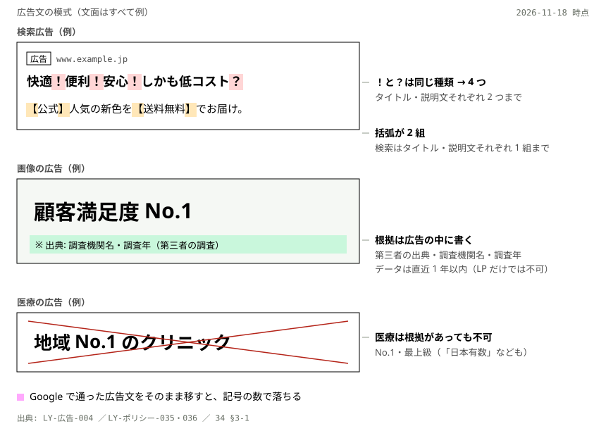

[ LINEヤフー / 34 ]
34審査落ち（掲載不可・掲載停止・アカウント停止）の原因と直し方
位置づけ: LINEヤフー広告（2026-04-01 に Yahoo!広告から改称）の審査だけを扱う。検索広告とディスプレイ広告（運用型）が中心で、予約型は代理店経由の広告主だけの商品なので要点だけ。日本の法令の中身は Google 側の ../Google広告の基礎/31_日本の広告法規とポリシー.md（以下 G31）に任せ、ここでは「どの法令に当たりうるか」の地図だけ書く。法律の助言ではない
このメモについて
- 確認日: 2026-11-18（LINEヤフー広告ヘルプ〔ads-help.yahoo-net.jp〕の「広告掲載基準」目次と各ページ約 45 本、「アカウント審査基準」目次と第 2・3 章、入稿規定〔文字・記号のルール〕、審査・審査状況・再審査のヘルプ、掲載制限・販売制限・掲載制限カテゴリー定義、lycbiz.com の公式コラム 5 本と公式お知らせ、広告品質の公式ページを取得して確認。ヘル…
- 位置づけ: LINEヤフー広告（2026-04-01 に Yahoo!広告から改称）の審査だけを扱う。検索広告とディスプレイ広告（運用型）が中心で、予約型は代理店経由の広告主だけの商品なので要点だけ。日本の法令の中身は Google 側の
../Google広告の基礎/31_日本の広告法規とポリシー.md（以下 G31）に任せ、ここでは「どの法令に当たりうるか」の地図だけ書く。法律の… - 関連メモ:
00_全体像.md§10（審査とポリシーの要約。以下 00§10）、61_LINE広告との統合の状況.md§5-3（掲載基準の統一）、Google 側の手本../Google広告の基礎/34_審査落ちの原因と直し方.md（以下 G34）、Meta 側../Meta広告の基礎/34_審査落ちの原因と直し方.md（以下 M34） - 使い方: 掲載不可・掲載停止が出たら、まず 1 章で「どの基準の・どの単位が・どの状態か」を確かめ、2 章の表で理由を引き、3 章で Yahoo! 固有の表記の落とし穴を見て、5 章の手順で直す。まとめて落ちたときは 8 章、アカウントが止まったときは 6 章から読む。審査落ちはよくあること（2025 年度だけで旧 Yahoo!広告の広告素材の非承認は約 2 億件と公式の透明性レポートが…
- 凡例: ✓ 公式で確認 ／ △ 公式の中で食い違う・言い方が揺れる ／ ? 公式に記載なし・確認できず
地図
本文
0.先に結論（10 行）
- 01
守る決まりは 1 本ではなく層になっている。アカウント審査基準（アカウントを開けるか・止めるか）、広告掲載基準（全 9 章。広告とリンク先の中身）、広告データ利用基準（ターゲティングに使うデータ）、入稿規定（文字数・記号・画像サイズなどの形式）、掲載制限・販売制限（面ごと・商品ごとに出さないカテゴリー）。2026-04-01 に旧 Yahoo!広告と LINE 広告の基準を 1 つに統一し、中身は概ね旧 Yahoo!広告の基準に寄せた ✓公式本文（
guideline-editorial、guideline-account、H:000044930、H:000044245、S-07） - 02
審査は入稿された広告・キーワード・画像・動画・ウェブサイトのすべてが対象で、「システム」と「目視」で随時。新規の広告は配信開始まで 3 営業日前後かかることがある。掲載中の広告も審査し直し、違反が見つかれば掲載停止 ✓公式本文（H:000045001）。Google の「ほとんど 1 営業日」より 2 日長く見る
- 03
ディスプレイの画像・動画は広告に設定した日から約 3 営業日（ライブラリに入れただけでは審査が始まらない「広告未設定のため保留」）。動的ディスプレイ広告の商品リストは約 5 営業日、予約型は掲載開始日の 4 営業日前の 23:59 が入稿の締め切り ✓公式本文（H:000045001、H:000044821、H:000044534）
- 04
状態は 5 つ: 承認済み／審査中／編集内容審査中／掲載不可／掲載停止（ディスプレイは「広告未設定のため保留」が加わる）。承認済みの広告を編集しても、審査中は元の内容で配信が続く（Google の「再審査中は配信が止まる」と違う）✓公式本文（H:000045072、H:000044821）
- 05
否認の理由と推奨する対応方法は、広告一覧の「審査状況」の i アイコンで見る。薬機法の抵触箇所のうち LINEヤフーが詳しく伝える必要があると判断したものだけ「否認理由詳細あり」と出て、どの箇所かのコメントが付く ✓公式本文（H:000044402、H:000044821）
- 06
再審査は広告を編集して保存することで依頼する。リンク先だけ直したときは編集せずに「保存」を押す（ディスプレイ）。否認理由がリンク先に関する理由 1 つだけなら一括で再審査を依頼できる。動的検索連動型広告とアプリ訴求広告は作り直すしかない ✓公式本文（H:000045044、H:000044447）。公式コラムは「修正しても自動では再審査されない、自分で依頼する」と書く（C:ヘルプ活用）
- 07
否認が多い理由の上位は、公式の情報では最上級表示・No.1 表示（旧 Yahoo!広告の 2025 年度の非承認で最多〔報道・抜粋〕）、医療広告の誇大表現と費用の強調（2026 年 4〜6 月のサポートへの問い合わせで上位 2 つ）✓公式本文（C:否認の傾向）。No.1 はクリエイティブの中に第三者の出典・調査機関名・調査年を書き、データは直近 1 年以内 ✓公式本文（H:000044774）
- 08
Yahoo! 固有の落とし穴は「表記」。同じ種類の記号はタイトル・説明文それぞれで 2 つまで（「！」と「？」は同じ種類）、同じ種類の記号の連続は不可、括弧は対で数え、検索広告はタイトル・説明文それぞれで 1 組まで、機種依存文字（㈱・①）不可、装飾的な記号・スペース・顔文字は不可、タイトルと説明文はそれぞれ独立した文、広告文に電話番号は書けない ✓公式本文（H:000044192、H:000044815）
- 09
「〜でお悩みの方へ」型も通らない。「○歳の方へ」「○キロの方へ」「髪の毛にお悩みの方へ」「多重債務で困っている方へ」「○○サイトを訪れた方へ」のように、見た人が自分が狙われたと感じる書き方は掲載不可。商品の対象者を説明する書き方（「20 代限定！○○化粧水」）なら可 ✓公式本文（H:000044812）。Meta の「個人の特性」の規定に近い（M34 §2-9）
- 10
違反を繰り返すとアカウント全体を停止する。アカウント審査基準の第 3 章は、①登録情報から不正の懸念 ②違反実績のあるアカウントの作り直しの繰り返し ③違反広告の大量入稿 ④違反広告の繰り返し入稿 ⑤第 4 章（掲載できない広告）の商材 ⑥不正な表現・手法（薬機法違反のおそれ・虚偽・審査後にリンク先を差し替える「サイトチェンジ」） ⑦その他、を停止の理由に挙げる。何回で止まるかの回数表は公開されていない ✓公式本文（
guideline-account、H:000044236、H:000044331、H:000044264）
0-1.Google の審査（G34）との対比

承認済みの広告の小さな修正は、配信を止めずに試せる。Google 側の知識ベースにあるのは「承認済みの再審査（Under re-review）中は配信が止まる」という別の場面の話で、編集中の扱いは比べていない。
出典: LY-ポリシー-019・LY-ポリシー-020・34 §0-1 ほか 3 件 · 2026-11-18 時点
表で見る（13 行。上の図のもとの表）
| 観点 | Google 広告（G34） | LINEヤフー広告 | 運用の判断への効き方 |
|---|---|---|---|
| 決まりの体系 | Google 広告のポリシー（禁止コンテンツ／禁止行為／制限付き／編集基準と技術要件）＋地域の法令 | アカウント審査基準＋広告掲載基準（9 章）＋広告データ利用基準＋入稿規定＋掲載制限・販売制限＋提携パートナーの基準 ✓（1-1） | 「どの基準で落ちたか」を最初に確かめる。形式（入稿規定）の違反と中身（掲載基準）の違反では直し方が違う |
| 審査の時間 | ほとんど 1 営業日、デマンド ジェネレーションは 3〜5 営業日、複雑な形式は最長 7 営業日 | 新規は配信開始まで 3 営業日前後、画像・動画は広告に設定した日から約 3 営業日、商品リスト約 5 営業日 ✓（H:000045001） | 入稿の締め切りを Google より 2 営業日早く置く。セール初日に新しい素材を入れない〔推測〕 |
| 編集中の配信 | 再審査中（Under re-review）は配信が止まる | 編集内容審査中は元の内容で配信が続き、否認されても元の広告が残る ✓（H:000045072、H:000044821） | 承認済みの広告の小さな修正は、配信を止めずに試せる。ただし画像・動画は編集できない（差し替えは新規の審査） |
| 判定の名前 | 不承認／有効（制限付き） | 掲載不可（新規が通らない）／掲載停止（承認済みが後から落ちる）。「制限付き」に当たる状態は無く、面による出し分けは掲載制限という別の仕組み ✓（H:000045072、H:000044245） | 「出ているのに一部の面で出ない」は審査ではなく掲載制限・販売制限・提携パートナーの判断を疑う（4 章） |
| 理由の詳しさ | ポリシー名＋API の evidences に引っかかった文言・URL | 否認理由（基準の項目名）と推奨する対応方法。どの箇所かのコメントは薬機法の一部だけ ✓（H:000044402） | 理由の名前だけで直さず、タイトル・説明文・画像・動画・LP のどれが対象かを 1 つずつ確かめる（C:否認の傾向） |
| 直したあと | 保存で自動再審査。判定の誤りは「Dispute decision」、1 広告 3 回まで | 編集して保存＝再審査の依頼。LP だけ直したら編集せず保存、または一括の再審査依頼 ✓（H:000044447、H:000045044）。異議の専用の手続きは見当たらない（サポート窓口、予約型は審査結果問い合わせ窓口フォーム）? | 「判定が誤り」と思っても、Google のような異議ボタンは無い前提で、サポートに根拠を示して問い合わせる |
| 違反の積み重ね | 違反警告（15 ポリシー）: 警告 → 3 日停止 → 7 日停止 → 強制停止。悪質な違反は予告なしの即停止 | アカウント審査基準の第 3 章の 7 項目でアカウントを停止。回数・日数の表は無い ✓（guideline-account） | 何回で止まるか読めない。1 回目の否認から、同じ表現を他の広告にも使っていないか全体を点検する〔推測〕 |
| 商品単位の締め出し | （G34 に対応する規定なし） | 過去に重大な違反（明らかな虚偽・誇大、重大な健康被害のおそれ等）があった商品は、表現を直しても以降その商品の広告は掲載不可。景品表示法の行政処分を受けた商品・サービスも是正が確認できるまで掲載不可 ✓（H:000044788、H:000044853） | 健康食品・化粧品の「攻めた表現」で一度大きく落ちると、その商品を二度と出せないことがある。最初の入稿こそ慎重に |
| 審査の回避 | 不承認の言い換えの量産、別アカウント、クローキングは即停止 | 違反実績のあるアカウントの作り直し、サイトチェンジ（審査通過後にリンク先を変える）はアカウント停止 ✓（H:000044255、H:000044264）。同じ広告主が複数アカウントで同じ内容の広告を出す「重複掲載」も不可 ✓（H:000044871） | 「LP を差し替えて通す」「アカウントを分けて面を取る」はどちらも最悪の手 |
| 個人を狙った書き方 | 広告文の書き方の専用規定は G34 に無い | 「ターゲティング対象であると認識される表現」は掲載不可（年齢・体型・悩み・多重債務・訪問履歴）✓（H:000044812） | 「〜のあなたへ」を「〜向けの商品です」に書き換える（2-12） |
| 表記 | 編集基準（記号の過剰使用・大文字の乱用など）。数の上限は書かない | 同じ種類の記号は 2 つまで、括弧は検索で 1 組まで、絵文字はタイトルで 2 回まで、機種依存文字不可 ✓（H:000044192） | Google で通った広告文をそのまま移すと、記号の数で落ちる（3 章） |
| No.1 の根拠 | 根拠を LP 等で示す（G34 §2-2 の不実表示の範囲） | クリエイティブの中に第三者の出典・調査機関名・調査年、データは 1 年以内 ✓（H:000044774） | LP に根拠があっても、広告の中に無ければ落ちる |
| 医療の価格 | 医療の価格表示の専用規定は G34 に無い（日本の法規は G31） | 自由診療はクリエイティブの省略されない箇所に自由診療である旨と標準的な費用。キャンペーン価格・割引率・二重価格・「お手頃価格」等の費用の強調は不可 ✓（H:000044705） | 美容医療は Google の感覚で「初回○円」を広告に出すと確実に落ちる |
0-2.同じ言葉で意味が違うもの
| 言葉 | Google 広告 | LINEヤフー広告 |
|---|---|---|
| 掲載停止 | （アカウントの「停止」はアカウント単位） | 承認済みの広告・キーワード・アセットが後の審査で落ちた状態（広告単位）。アカウントの停止は別に「アカウントを停止します」と書く ✓（H:000045072、guideline-account） |
| 制限 | 「有効（制限付き）」＝審査の結果の一つ | 「掲載制限」＝面ごとに出さないカテゴリーを決める機能、「販売制限」＝その商品では売らない・審査で否認するカテゴリー ✓（H:000044245） |
| 再審査 | 直して保存すれば自動、異議は別の操作 | 編集して保存することが再審査の依頼。LP だけ直したときは自分で保存か一括依頼をしないと見直されない ✓（H:000044447）、C:ヘルプ活用 |
| ガイドライン | ポリシー全体を指すことが多い | 審査のヘルプは「広告掲載ガイドライン」と書き、目次は「広告掲載基準」と書く。中身は同じものを指していると読める〔推測〕（H:000045001、guideline-editorial） |
1.審査の仕組み
- アカウントを停止
- 掲載不可／掲載停止
- その面に出ないだけ
- 判断の責任は広告主にある
- 「承認された＝法的に問題ない」ではない
- 概ね従来の Yahoo!広告 広告掲載基準の方針
1-1.決まりの構成（どの基準で落ちたか）✓公式本文
| 名前 | 何を決めるか | 落ちると何が起きるか | 出典 |
|---|---|---|---|
| アカウント審査基準（第 1〜3 章） | 第 2 章: アカウントを開くときの登録情報・サイトの表示・サイトの言語・禁止の表現や商品・当社が不適切と判断するもの。第 3 章: 開設後に止める 7 つの場合 | アカウントを開設できない／アカウントを停止 | guideline-account、H:000044188 |
| 広告掲載基準（第 1〜9 章） | 第 1 章 掲載判断／第 2 章 ユーザーの利便性（主体者・関連性・有用性・言語・重複・年齢・迷惑・意に反する）／第 3 章 表示の一般的注意（虚偽・不当表示・最上級・公正競争規約・比較・消費税）／第 4 章 掲載できない広告／第 5 章 業種別（36 項目）／第 6 章 薬機法など（医薬品・化粧品・健康食品・健康器具）／第 7 章 宗教・選挙・政党・意見広告・募金／第 8 章 広告表現規制（クリエイティブの表現 21 項目）／第 9 章 広告商品・機能ごと（検索・各アセット・ディスプレイの各形式・予約型の商品） | 広告・キーワード・アセット・画像・動画が掲載不可／掲載停止 | guideline-editorial、H:000044781 |
| 広告データ利用基準 | ターゲティングに使うデータ（慎重に扱うべき個人に関するデータ、プライバシー性の高い位置情報、対象ユーザー数が少ないターゲティングなど） | 本文は今回読んでいない ?（関連ヘルプの題名だけ確認） | H:000044853 の関連ヘルプの題名、C:データ利用基準（題名のみ） |
| 入稿規定 | 文字数・使える文字と記号・画像や動画の仕様（広告の形式ごと） | 多くは入稿時のエラー。表記の違反は審査で掲載不可 | H:000044930、H:000044192 |
| 掲載制限・販売制限 | 掲載制限: 面ごとに制限するカテゴリー。販売制限: その広告商品で売らない、または審査で否認するカテゴリー | 掲載制限はその面に出ないだけ（否認ではない）。販売制限は否認 | H:000044245、H:000062172 |
| 提携パートナーの基準 | 提携サイト・アプリが独自に決める基準 | LINEヤフーの基準を満たしていても、提携先で掲載を断られることがある | H:000044805 |
| 広告配信ガイドライン（掲載面の基準） | 広告を出す側のサイト・アプリ（掲載面）の基準。2026-08-04 に UGC の面の基準を強めた | 広告主の審査ではない（掲載面の品質）。違法賭博を紹介する面には配信しない | C:掲載面の新ガイドライン |
| 広告取扱基本規定 | 契約。掲載制限は 9 条 1 項 (3)、販売制限は 7 条 2 項に基づく掲載拒絶 | 契約上の掲載拒絶・解除（条文の本文は PDF で未読 ?） | H:000044245 |
LINEヤフーは基準に基づいて個別に可否を判断するが、その判断は広告主の責任を軽くしない。申し込むときに広告の責任は広告主が負うことを承諾したものとする ✓公式本文（H:000044817）
〔推測。上の一文からの読み〕。審査に通った表現でも景品表示法・薬機法の責任は広告主に残る（G31）
統一の経緯: 2025-11-17 に統一を予告、2026-04-01 のプラットフォーム統合と同時に適用。対象はアカウント審査基準・広告掲載基準・審査判断基準で、LINE の Talk Head View と NEWS TOP AD も含む。一部の項目は以前から見直し・統一が進んでおり、その他は概ね従来の Yahoo!広告 広告掲載基準の方針に統一 ✓公式本文（S-07）。更新履歴にも 2026-04-01 の行がある ✓（H:000046487）
運用の判断への効き方:
- 否認の理由の文言に「アカウント審査基準」と出たらアカウント全体の問題（6 章）、「広告掲載基準 第○章」なら広告とリンク先の問題（2 章）、入稿時のエラーなら入稿規定（3 章）。最初にここで分けると、直す人（LP の担当か、広告文の担当か、契約の担当か）が決まる
- 「審査は通ったのに一部の面で出ない」は掲載制限か提携パートナーの判断。広告を直しても変わらない（4 章）
1-2.いつ審査されるか ✓公式本文
| きっかけ | 何が起きるか | 出典 |
|---|---|---|
| 新規の入稿 | 広告・キーワード・画像・動画・ウェブサイトのすべてが対象。システムと目視で随時 | H:000045001 |
| ディスプレイの画像・動画 | 広告に設定したときに審査が始まる。設定するまでは「広告未設定のため保留」 | H:000045001、H:000044821 |
| 承認済みの広告・キーワード・アセットの編集（URL 情報の編集を含む） | 「編集内容審査中」。その間は編集前の内容で配信が続き、承認されれば上書き、否認されれば元のまま | H:000045072、H:000044821 |
| 掲載中の広告の見直し | ガイドラインの見直しのたびに、掲載中の広告・画像・動画・ウェブサイトも審査する。違反なら掲載停止。「承認済み」でも後日掲載停止になりうる | H:000045001、H:000045072 |
| 掲載後のパトロール | 法規に触れるおそれのある広告を中心に巡回し、クリエイティブやリンク先が意図的に変えられていないかを確かめる。時事のキーワードにも対応 | C:広告審査の体制 |
| 第三者の指摘 | 主にユーザーからの指摘をもとに対象を選び、多面的に調べて判断 | C:広告審査の体制 |
| ユーザーのネガティブな意見のしきい値 | ブランドパネル・プライムディスプレイ（PC）・タイムライン広告枠のレスポンシブ広告（いずれも運用型）は、入稿数や意見数などから決めたしきい値を超えると前週分の集計に基づき毎週月曜日以降に掲載停止。他の商品でも停止しうる | H:000044801 |
| 動的検索連動型広告のページフィード | ページ URL ごとに審査し、終わったものから順にクロール。大量なら通常（約 3 営業日）より長い | H:000045001 |
| 予約型 | 掲載開始までに全件審査（入稿前審査・掲載前審査）、掲載後は追加入稿分とリンク先 | H:000044534 |
| リンク先（LP）の中身だけの変更 | ? LP だけを変えたときに自動で審査が始まるとは書かれていない。一方で審査通過後にリンク先を変える「サイトチェンジ」はアカウント停止の理由 ✓（H:000044264）。パトロールはリンク先の変更を見る（C:広告審査の体制）。確かめ方: 大きな LP の変更の後は、ディスプレイなら広告を編集せず「保存」して見直しを依頼できる（H:000044447） | — |
1-3.誰が審査するか ✓公式本文
- AI を使った「システム」と「人の目」。24 時間 365 日体制。人の審査は、独自のガイドラインの研修を受けた日本人の担当者が実際の端末で行う ✓（C:広告審査の体制）
- 掲載開始前に、広告主に過去の不正が無いか、リンク先が正常に動くか、法規・公序良俗に反しないかを見る ✓（C:広告審査の体制）
- ガイドラインは法務部門を含む複数の部門で協議して決める ✓（C:広告審査の体制）
1-4.所要時間 ✓公式本文
| 対象 | 目安 | 出典 |
|---|---|---|
| 新規の広告（検索・ディスプレイ運用型） | 配信開始まで 3 営業日前後（FAQ は約 3 営業日） | H:000045001、S-74 |
| ディスプレイの画像・動画 | 広告に設定した日から約 3 営業日 | H:000045001 |
| 動的ディスプレイ広告の商品リスト | 約 5 営業日。審査完了前に同じ商品を含むファイルを上げ直すと最後のものが対象になり、さらに長くなる | H:000045001 |
| 動的検索連動型広告のページフィード | 約 3 営業日。大量の URL は長くなる | H:000045001 |
| 予約型の掲載前審査 | 3 営業日程度。掲載開始日の 4 営業日前の 23:59 までに入稿。押し込み審査（3 営業日前 0:00〜2 営業日前 23:59 の入稿）は 1〜2 営業日、原則入稿順に 4 件まで | H:000044534 |
| 予約型の入稿前審査 | 3 営業日程度。リッチ広告などの予約型専用広告は掲載開始 11 営業日前まで（トピックス PR は 7 営業日前まで）の依頼が必須。ブランドパネル クインティ・ブランドパネル トップカバー・Talk Head View（Premium を含む）は除く（H000044534、67§6-2・§14 #1）。医療・薬機・宗教などの内容や公開前サイトは商品にかかわらず必須 | H:000044534 |
| 再審査 | 3 営業日ほど（2024 年時点の公式コラム）。△ 現行のヘルプに再審査だけの目安は見当たらない | C:審査とは（2024） |
| 本人確認書類 | 約 3 営業日 | C:本人確認 |
運用の判断への効き方:
- 開始日から逆算して3 営業日＋再審査 1 回分（さらに 3 営業日）を見る。土日祝をはさむと 1 週間を超える〔推測〕
- ディスプレイの画像は「アップロードした日」ではなく「広告に設定した日」から数える。素材を先に上げておいても、広告に付けるのが遅れれば審査も遅れる
- 大量の入稿や集中する時期は長くなる（H:000045001）。年末・新年度の前は早めに〔推測〕
1-5.ステータスの全種類と配信 ✓公式本文（H:000045072、H:000044821、H:000044402）
| ステータス | 意味 | 配信 |
|---|---|---|
| 承認済み | 掲載できる状態。掲載開始後に審査が行われるものも含むので、後日掲載停止になりうる | 出る |
| 審査中 | 審査中 | 出ない |
| 編集内容審査中 | 承認済みのものを編集したので審査中 | 編集前の内容で出る。否認なら元のまま |
| 広告未設定のため保留（ディスプレイの画像・動画） | 広告に設定されていないので審査を保留 | 出ない（広告に付けると審査開始） |
| 掲載不可 | 審査の結果、承認されなかった | 出ない |
| 掲載停止 | 承認済みのものを審査し直した結果、停止 | 止まる |
- ディスプレイで画像・動画を付けた広告は、「審査状況」と合わせて「配信状況」を見る。表示例: 「配信停止（画像が掲載不可）」「配信停止（動画が掲載停止）」「配信停止（画像がオフ）」 ✓（H:000044402）
- 画像・動画は編集できないので「編集内容審査中」は無い ✓（H:000044821）
- API でも、新しく追加した設定が審査で承認されず設定されていない状態を「掲載不可」と返す値がある〔公式・抜粋〕（ads-developers.yahoo.co.jp の告知の検索結果）
1-6.どの単位で判定されるか ✓（単位ごとの並べ方は筆者）
| 単位 | 何が審査されるか | 落ちたときの影響 | 出典 |
|---|---|---|---|
| キーワード | キーワードそのもの（検索） | そのキーワードだけ出ない | H:000045072 |
| 広告 | タイトル・説明文・表示 URL・リンク先。RSA はアセットごとの審査状況を i アイコンで見られる | その広告（またはアセット）が出ない | H:000045046 |
| 広告表示アセット | クイックリンク・電話番号・テキスト補足・カテゴリ補足・画像・ファビコン・ビジネス名 | そのアセットが出ない | H:000045072、guideline-editorial 第 9 章 |
| 画像・動画（ディスプレイ） | 素材ごと | その素材を使う広告が配信停止 | H:000044402 |
| ウェブサイト（リンク先） | 主体者の表示、関連性、有用性、業種の要件 | そのサイトに向く広告が掲載不可。理由がリンク先に関する 1 つだけなら一括で再審査を依頼できる | H:000045044、H:000044447 |
| 動的検索連動型広告のタイトルの生成元サイト | 自動で作られたタイトルが基準に抵触すると、生成元のサイトの広告掲載を停止 | サイト単位で止まる | H:000045044 |
| 商品（訴求する商材） | 過去の重大な違反、景品表示法の行政処分 | その商品の広告がすべて出せなくなる | H:000044788、H:000044853 |
| アカウント | 登録情報、サイトの表示、違反の量と繰り返し | アカウント全体が停止 | guideline-account |
| 面（掲載面） | 掲載制限カテゴリー | その面だけ出ない | H:000044245 |
1-7.原因を特定する手順 ✓公式本文
- 1
検索広告: 広告管理ツールでキーワードまたは広告の一覧を開き、「表示項目」→「表示項目の編集」で「審査状況」「審査申込日」「審査完了日」にチェックして「適用」（H:000045046）
- 2
RSA はアセットごとの審査状況を、「審査状況」の i アイコンで見る（H:000045046）
- 3
ディスプレイ広告: 広告一覧の「審査状況」の i アイコンで「審査否認理由と対応方法」を見る。「（否認理由詳細あり）」なら抵触箇所のコメントがある。フィルターで「否認理由詳細」のある結果だけに絞れる（H:000044402、H:000044821）
- 4
お知らせメール: 審査否認（掲載不可・掲載停止）のお知らせメールを受け取る設定ができる（C:審査とは〔2023 公開の公式コラム〕）
- 5
理由の名前に当たる基準のページをヘルプで開き、「掲載不可」「掲載可」の事例と見比べる（C:ヘルプ活用）
運用の判断への効き方:
- 「否認理由詳細」が出るのは薬機法の一部だけ。それ以外は、理由の項目名から自分で抵触箇所を探すことになる。項目名だけで判断せず、タイトル・説明文・画像・動画のどれが対象かを照らし合わせる（C:否認の傾向）
- 複数の否認理由が並ぶときは、リンク先の理由と広告文の理由を分けて直す。リンク先の理由 1 つだけなら一括再審査が使える（5 章）
2.否認の理由の一覧表（最重要）
- 章の番号ではなく項目名で探す
- 主体者の名称（会社名か氏名。屋号・事務局名は不可）
- 住所（地番まで省略しない。海外なら国名）と問い合わせ先
- アカウント名に広告主とサイト所有者の両方を入れる
- 商標登録の無いロゴなら会社名も
- 視認できる大きさで
- 列の見方: 「理由の名前」は否認の文言に出る基準の項目名（章と番号は
guideline-editorialの目次の並び）。「法規との関係」は地図だけ（中身は G31）。印はすべて ✓公式本文（各行の出典） - △ ヘルプの中で章の番号が揺れている: 目次では「広告表現規制」は第 8 章だが、一部のページの「関連基準」は「第 9 章 広告表現規制」「第 2 章 広告表現規制」と書く（H:000044919、H:000044855）。2024 年の公式コラムは全 10 章（「子ども向けサービス（Yahoo!きっず）」の章があった）と紹介している（C:審査とは）。章の番号ではなく項目名で探す
2-1.第 2 章 ユーザーの利便性のための基準
| 理由の名前 | よくある例 | 直し方 | 法規との関係 | 出典 |
|---|---|---|---|---|
| 広告の主体者の明示（リンク先） | 「運営事務局」「屋号」だけで会社名・個人名が無い。住所が番地まで無い。連絡先を一部伏せている・暗号化している | リンク先に主体者の名称（会社名か氏名。屋号・事務局名は不可）と、住所（地番まで省略しない。海外なら国名）と問い合わせ先（電話・メール・フォーム・公式 SNS・「書面で受け付ける」旨のいずれか）を正確に書く | 特定商取引法の表示義務（通販）と重なる（G31） | H:000044818 |
| 同（他社のサイトに飛ばす場合） | 動画サイトの公式チャンネルに飛ばすが、そこに広告主の名称・連絡先が無い | タイアップページなら媒体社の名称・住所・電話が載っていれば可、アカウント名に広告主とサイト所有者の両方を入れる（例 A社_B）。モールの出店ページなど編集権限がある他社サイトは、広告主の名称・住所・連絡先が載っていれば可 | — | H:000044818 |
| 広告の主体者の明示（クリエイティブ） | 「提供：○○」が小さくて読めない。商品写真のロゴだけ。主体者表記欄に「脱毛なら○○エステ」「［公式］○○」と飾りを入れた | テキスト広告は会社名・ブランド名・商品名・サービス名のいずれか（字数で難しければ省略可）。静止画はロゴ（商標登録の無いロゴなら会社名も）か「提供：○○」を視認できる大きさで。動画は途中か終了後の静止画面に。主体者表記欄には会社名か登録商標の名前だけ（法人格の省略は可） | — | H:000044855 |
| ダブルブランド | 2 社のロゴが同じ大きさで、どちらの広告か分からない | 広告主のロゴを大きくするなど主従を明確に。2 社で広告する必然性・関連性を明確に。連合広告・共同購入は不可 | — | H:000044855 |
| 広告の関連性 | キーワード「テニスクラブ」にゴルフクラブの広告。LP に訴求している商品の情報が無い | キーワード・クリエイティブ・LP の 3 つの内容をそろえる。LP の分かりやすい場所に訴求する商品・サービスの情報を置く | — | H:000044919 |
| 広告の有用性 | 独自のコンテンツが乏しい。第三者へのリンクや広告が多いアービトラージサイト。信憑性のない体験談・口コミ | 広告主独自の十分な情報を置く。比較サイト・体験談サイト・まとめサイトも、独自のコンテンツが充実していれば可。体験談の信憑性を担保する | 景品表示法（ステルスマーケティング）と隣り合う（G31） | H:000044579 |
| 広告で使用される言語 | サイト内で言語が統一されていない（2024 の公式コラムの例） | 本文は今回読んでいない ? | — | C:審査とは（題名のみ） |
| 重複掲載の禁止 | 同じ広告主が A・B 2 つのアカウントで同じ商品（公式サイトとキャンペーンサイト、総合サイトと女性向け特設サイト）の広告を出す | 同一ページに同一内容の広告を複数出さない（当社が認めた広告を除く）。1 つのアカウントにまとめる | — | H:000044871 |
| 年齢の指定ができる広告商品 | アルコール飲料（20 歳以上）の広告を18〜19 歳に向けて年齢ターゲティング | 制限されるべき年齢を配信対象に含めない。年齢を設定しないのは可（意図的に 19 歳以下に向けた場合だけ不可）。対象: アルコール、公営競技、パチンコ、出会い系・結婚紹介、年齢制限のあるゲーム・映画・雑誌・コミック、貸金業、金融商品取引業・商品先物取引業など | 各業法・業界の自主基準 | H:000044891 |
| ユーザーに迷惑となる広告／意に反する広告 | 本文は今回読んでいない ?（アカウント審査基準のサイトの表示: バックボタンで戻れない、第三者のポップアップ、ウィンドウの大きさの強制変更、同意なしのダウンロードやアプリの起動は不可 ✓ H:000044188） | LP から強制的な動きを外す | — | H:000044188 |
2-2.第 3 章 表示に関する一般的注意（景品表示法の領域）
| 理由の名前 | よくある例 | 直し方 | 法規との関係 | 出典 |
|---|---|---|---|---|
| 虚偽表示の禁止 | 「期間限定」なのに期間後も同じキャンペーン。「選ばれた人だけ」なのに誰がどの端末で開いても同じ、別サイトでも同価格 | 期間・対象を事実どおりに。終わったら広告と LP から外す | 景品表示法（有利誤認） | H:000044668（2026-11-02 に事例を変更） |
| 不当表示の禁止（優良誤認） | カシミア 50% なのに「100%」。調査なしの「地域トップクラスの合格率」 | 根拠のない優位の表現を外すか、根拠を示す | 景品表示法 | H:000044853、H:000044808 |
| 不当表示の禁止（有利誤認） | いつも半額なのに「今だけ半額」。他社もやっているのに「無金利分割は当店だけ」。定期購入なのに「初回限定 980 円」だけを強調し条件が無い | 定期購入の条件を明示。LP では購入ボタンより上、または申し込みフォームの上に条件を書く（申し込みの意思決定の前の導線上） | 景品表示法、特定商取引法（定期購入の表示） | H:000044853 |
| 同（行政処分） | 消費者庁から景品表示法の行政処分を受けた商品・サービス | LINEヤフー広告内の表示の有無に関係なく、処分以降は掲載できない。是正が確認できれば再開可。連絡は担当営業かサポート窓口 | 景品表示法 | H:000044853 |
| 最上級表示、No.1 表示 | 「日本一の安値と品質」で出典なし。「県内一」の根拠が 1 年以上前の調査。「顧客満足度 No.1」「業界最安値」「国内で唯一」「販売実績第 1 位」「○○大賞 5 冠」 | クリエイティブ内の省略されない箇所に第三者の出典・調査機関名・調査年。データは直近 1 年以内の最新。画像内の文字が読めなければ不可。「最大」「初」「唯一」「元祖」「これまでにない」「当社だけ」なども最上級として扱う。調査の対象・範囲（年代・地域）も広告上で分かるように | 景品表示法 | H:000044774、C:否認の傾向 |
| 公正競争規約の遵守 | 業界の公正競争規約の表示を守っていない | 公正取引協議会の会員でなくてもその業界の規約の遵守を求める | 景品表示法に基づく公正競争規約（不動産・自動車・食品など） | H:000044757 |
| 比較広告 | 「B 電気よりお買い得」とあるがサイトに根拠が無い | 実証された事項だけを公平な基準で比べる。根拠をサイトに書く | 景品表示法（比較広告ガイドライン） | H:000044752、H:000044861 |
| 消費税に関する表示 | 「9,800 円（税抜）」「9,800 円＋税」「本体価格」 | 税込価格（総額）を表示。「10,780 円（税抜価格 9,800 円）」「9,800 円（税込 10,780 円）」は可 | 消費税法（総額表示義務） | H:000044845 |
- 二重価格（「通常価格○円 → ○円」）: 一般の業種の基準として二重価格だけを扱うページは見当たらなかった ?。有利誤認（H:000044853）の事例に「メーカー希望小売価格の半額」「今だけ」が挙がっている。医療機関では二重価格そのものが「費用の強調」で掲載不可 ✓（H:000044705）。比較対照価格の考え方は G31（景品表示法の価格表示ガイドライン）
2-3.第 4 章 掲載できない広告（アカウントの停止にもつながる）
| 区分 | 例 | 注意点 | 出典 |
|---|---|---|---|
| 法令違反・そのおそれ | — | 第 4 章に当たる商材を入稿するとアカウントを停止（アカウント審査基準 第 3 章 5） | H:000044788、H:000044323 |
| 社会規範・他人の権利 | 誹謗中傷、知的財産権の侵害、プライバシーの侵害、差別、セクハラ、詐欺・悪質商法、投機心を著しくあおる、非科学的で不安を与える、犯罪の美化、反社会的勢力、残虐、露骨な性、内容が不明確、政府の方針・業界のガイドラインへの違反、ユーザートラブルの情報が複数確認されたもの | 業界のガイドラインの例: 日本貸金業協会の細則に準じ、ギャンブル経験者・興味のある人のデータを使った貸金業の広告は不可 | H:000044788 |
| 商品・サービス | 性的な商品・サービス（代理店経由で運用するアカウントと特定広告主は一部可）、児童ポルノを連想、売春のあっせん、国内未承認の医薬品・医療機器、脱法ドラッグ、模倣品、武器、ねずみ講、連鎖販売取引（マルチ）への勧誘、盗撮目的のカメラ、ショッピング枠の現金化、チケットの不正転売、たばこ、過去に重大な違反実績がある商品 | CBD は THC が含まれず、サイトにその旨が明確に書いてある場合だけ可（「法令を遵守しています」では不可）。加熱式たばこは日本たばこ協会の正会員・賛助会員だけ。電子たばこは可だが【Yahoo! JAPAN ID 20 歳以上×禁煙関心除外】か【推定 20 歳以上×年齢確認ページ】の設定が必須 | H:000044788 |
| 当社が不適切と判断 | 逆 SEO、有償であることが明確でない電子渡航認証（ESTA など）の申請代行、ウイルス感染のおそれのあるサイト、未認証の LINE 公式アカウントへのディープリンク、個人の LINE アカウント（グループを含む）へのディープリンク、投資・副業を訴求して未認証の LINE 公式アカウントや個人・グループへの友だち追加を促すもの | ESTA 代行は「代行サービス」であることをサイトとタイトル（テキスト広告）またはクリエイティブの省略されない箇所に、手数料をサイトに明記 | H:000044788 |
| 重大な違反実績のある商品 | 明らかな虚偽・誇大、重大な健康被害のおそれ、その他重大な違反の表現 | 表現を直しても、以降その商品の広告は掲載できない | H:000044788 |
2-4.健康食品・化粧品・医薬品（第 6 章、薬機法の領域）
| 理由の名前 | よくある例（掲載不可） | 直し方 | 法規との関係 | 出典 |
|---|---|---|---|---|
| 食品、健康食品: 医薬品的な効能効果 | 「癌に効く」「高血圧の改善」「便秘がなおる」（治療・予防）。「疲労回復」「老化防止」「免疫が弱っている人へ」「新陳代謝を高める」（機能の増強）。「○○病が気になる方に」「ここでは薬機法の関係で効果は書けません」（暗示）。「美肌」「腸内スッキリ」「髪の毛ふさふさ」「おなかすっきり」（身体の特定部位への作用の暗示） | 医薬品的な効能効果を明示も暗示もしない。機能性表示食品は届出の範囲内、特定保健用食品は許可の範囲内、栄養機能食品は規格基準で決められた表示 | 薬機法（無承認無許可医薬品）、食品表示基準、健康増進法、景品表示法 | H:000044802 |
| 同: 用法用量 | 「1 日 2 個が適当です」「お休み前にお飲みください」 | 摂取の時期・量・方法を示さない | 薬機法 | H:000044802 |
| 同: 形状 | アンプル、舌下錠、腸溶錠、徐放錠 | 医薬品的な剤型は不可。カプセル・錠剤・粉末・顆粒・液状は「食品」と明記すれば可 | 薬機法 | H:000044802 |
| 同: 分けて出す手法 | 商品名を出さず成分の効能を訴える広告と、商品そのものの広告を別々に作り、同じページや同じユーザーに出す | 時期をずらしても不可。成分広告をやめる | 薬機法（暗示） | H:000044802、H:000044910 |
| 薬用化粧品・化粧品: 効能の範囲の逸脱 | 一般化粧品で別表 2（56 項目）の外の効能。薬用化粧品で承認外の効能。「美白」を承認の効能の言い換え無しで書く。「エイジングケア成分ヒアルロン酸」のように成分が有効成分と誤解される書き方 | 一般化粧品は 56 項目の範囲、薬用は承認された範囲。「美白」は「メラニンの生成を抑え、しみ、そばかすを防ぐ」等の承認の文言とセット。メーキャップ効果（「小じわを目立たなく見せる」）は可 | 薬機法、医薬品等適正広告基準、粧工連のガイドライン | H:000044910 |
| 同: 保証・安全性 | 「安全性は確認済み」「アトピーの方にもお勧め」「肌質不問」「臨床データでもはっきり証明」「満足度 97%」「使い続けたい 93%」、単なる「無添加」、「角質層の奥へ」以外の浸透表現 | 保証の表現を外す。数値は使用感・香りの嗜好などに関するものと近くに分かる大きさで明示。無添加は何を添加していないかを明示。浸透は「角質層まで」と明記 | 薬機法 | H:000044910 |
| 同: 体験談 | 「保湿効果に満足」「すごく潤いました *個人の感想です」 | 体験談は不可。「個人の感想です」の注釈は救済にならない。使用感・使い方・香りの感想は可 | 薬機法 | H:000044910 |
| 同: 推薦・特許・最大級 | 「皮膚科専門医も勧める」「○○大学教授談」「特許製品」「化粧品の王様」「製薬会社だからできた」 | 推薦・特許（事実でも不可。パッケージ画像内の正確な製法特許表示は例外）・最大級を外す | 薬機法 | H:000044910 |
| 同: 不安感 | 「シミをそのままにしておくと一生消えなくなります」 | 不安をあおる表現を外す | 薬機法 | H:000044910 |
| 医薬品・医薬部外品・医療機器、健康器具（雑貨） | 本文は今回読んでいない ?（更新履歴: 2026-05-13 に要指導医薬品の販売条件〔薬剤師による対面か映像・音声での服薬指導〕を更新）。健康器具で「着るだけで筋肉がつく」はアカウント停止の例 ✓ | 医薬品の効能は承認の範囲と条件。健康器具は医療機器的な効能を表示しない | 薬機法 | H:000046487、H:000044264 |
- 公式の否認理由の FAQ がある: 「食品、健康食品の広告で『医薬品的な効能効果を暗示する表現』を理由に審査が否認されました。どうすればよいですか？」「化粧品、薬用化粧品の広告で『効能効果の範囲の逸脱』を理由に…」（題名だけ確認、本文未読 ?）（H:000044802・H:000044910 の関連ヘルプ）
2-5.医療・美容医療・エステ（第 5 章。問い合わせの最多領域）
| 理由の名前 | よくある例（掲載不可） | 直し方 | 法規との関係 | 出典 |
|---|---|---|---|---|
| 医療機関: 広告できる事項 | クリエイティブに 14 項目の外の事項（専門外来、死亡率、著名人の治療実績、医師個人の手術件数、治療の効果「2 週間で 90% の患者に効果」） | クリエイティブは広告できる事項だけ。サイトは限定解除の 4 要件（患者が自ら求めて入手する情報、問い合わせ先、自由診療の内容・費用、主なリスク・副作用）を満たせば広げられるが、クリエイティブは限定解除の要件を満たすことがない | 医療法、医療広告ガイドライン | H:000044705 |
| 同: 自由診療の費用 | 初診料だけ。最低価格だけを切り出す。部位・回数で変わるのに幅が無い | クリエイティブの省略されない箇所に「自由診療」等の保険が使えない旨と標準的な費用。幅（「5 万〜5 万 5 千円」）や「約○円」は可、麻酔料などを含む総額の目安 | 医療広告ガイドライン | H:000044705 |
| 同: 症例数 | 「10 万人以上がご相談」「2018 年度症例数 20,000 件」 | 期間を暦月単位で併記 | 医療広告ガイドライン | H:000044705 |
| 同: 誇大 | 「質の高い医療」「経験豊富な医師」「確かな技術」「苦痛のない内視鏡」「副作用のない治療法」「安全な手術」「あなたに合わせた最適な治療」「4〜6 か月で髪が増えたと実感」 | 主観・根拠を示せない表現を外す。「期待できる」「目指せる」に言い換えても全体で効果を強く印象付けるなら不可 | 医療広告ガイドライン（Q&A で「最適」は誇大） | H:000044705、C:否認の傾向 |
| 同: 比較・最上級 | 「日本有数の実績」「県内一の医師数」「九州で初導入」「業界最大手」 | 医療では根拠を付けても No.1・最上級は不可（一般の No.1 の基準とは別） | 医療広告ガイドライン | H:000044705、C:否認の傾向 |
| 同: 費用の強調（品位） | 「今なら○円でキャンペーン」「全施術 30% OFF」二重価格「お手頃価格」「学割」「WEB 予約限定クーポン」「来院者全員にプレゼント」「モニター価格」「初回費用 0 円を大きく」 | 標準的な費用だけの表示にする（「両目で 90,000 円。自由診療。」は可） | 医療広告ガイドライン | H:000044705、C:否認の傾向 |
| 同: 体験談・前後写真 | 治療の効果に触れる患者・スタッフの体験談、誤認させる術前術後の写真 | 体験談は不可（限定解除のサイトで治療に触れない感想は可）。前後写真は限定解除のサイトで内容・費用・リスク・副作用の詳しい説明と一緒なら可 | 医療広告ガイドライン | H:000044705 |
| 同: 暗示の手法 | 「アンチエイジングクリニック」という名前、回復のイラスト、雑誌記事の引用、「癌消える」のようなドメイン、別サイトへの誘導 | 名前・画像・URL も含めて見直す | 医療広告ガイドライン | H:000044705 |
| 同: NIPT | 日本医学会の認証を受けていない医療機関の新型出生前診断 | 認証医療機関だけ可 | 指針・厚労省通知 | H:000044705 |
| 男性器特有の治療（ED・包茎など） | 症状・治療内容の文字（「ED」「早漏改善」）がクリエイティブの 1 辺から 1/4 の外にある。「勃起力」「生涯現役」「モテる男に」「パートナーを喜ばせる」。女性の画像（医療従事者と分かる白衣・スクラブ姿を除く） | 症状・治療内容はいずれか 1 辺の外縁から全体の 1/4 以内に、1 か所だけ。正式な施術名・治療薬の名前は制限外 | — | H:000044801（2026-09-07 に解説を追加） |
| 美容、エステティック | 「治療院」「クリニック」「診療」「冷え性の治療」「永久脱毛」「肌年齢−15 歳」「アンチエイジング」「−10kg」 | 医療行為（レーザー脱毛・アートメイク・ケミカルピーリング・ピアッシングなど）を行わない・思わせない。「施術」「セラピー」は可。「−8kg」は個人の目標なら可、効果の保証は不可 | 医師法、景品表示法 | H:000044753 |
運用の判断への効き方:
- 美容医療の広告は、価格を出すなら「自由診療＋標準的な費用」だけ、割引・限定・お得感は一切出さない。Google の LP 改善の型（オファーを前面に）をそのまま当てると否認が続く
- 2026-11-11 に Yahoo!ニュースで美容医療・エステ・発毛育毛などの掲載制限が解除された（S-09）。面が広がった分、表現の審査は変わらないので、配信が増えるタイミングで落ちる広告を出さない
2-6.金融・投資・暗号資産・貸金（第 5 章）
| 理由の名前 | よくある例（掲載不可） | 直し方 | 法規との関係 | 出典 |
|---|---|---|---|---|
| 金融商品取引業、商品先物取引業 | 登録番号がサイトに無い。手数料・元本割れのおそれの記載が無い | 登録・許可番号をサイトに（例: 関東財務局長（金商）第●号）。手数料、元本欠損のおそれ、元本を上回る損失のおそれを明記。業界団体の広告規定を守る | 金融商品取引法、商品先物取引法 | H:000044799 |
| 貸金業: 安易な借入れ | 「無審査」「即日融資」（時間帯で対応できない旨が無い）「ブラック可」「借りやすさ No.1」「お財布感覚」 | 安易な借入れを助長しない。即日は条件の注記で可 | 貸金業法、日本貸金業協会の細則 | H:000044936 |
| 貸金業: 多重債務者を対象 | 「他店利用者大歓迎」「借入件数多い方」「多重債務一本化」「失業中の方」 | 対象を限定する表現を外す | 同 | H:000044936 |
| 貸金業: 表示事項 | 登録番号・貸付利率が無い | 貸金業登録番号（例: 関東財務局（○○）第○○号）と貸付利率を表示 | 貸金業法 | H:000044936 |
| 貸金業: データの利用 | ギャンブル経験者・興味のある人のデータでの配信 | 使わない | 日本貸金業協会の細則 | H:000044936、H:000044788 |
| 暗号資産交換業 | 登録番号が無い。法定通貨でない旨・価格変動の記載が無い。日本で登録の無い海外の業者 | 金融庁の登録番号をサイトに。名称・仕組み、法定通貨ではない・価格変動がある旨、手数料を明記。海外の未登録業者は不可 | 資金決済法 | H:000044617 |
| 投機心、射幸心を煽るような表現 | 「○○するだけで」「短時間で」誰でも高収入。お金を得る方法の記載が無い。利益の保証。投資サービスで紙幣・通貨を連想させる画像 | 方法を具体的に書き、保証しない。投資の訴求では紙幣・通貨の画像を使わない（紙幣に紛らわしい画像は通貨及証券模造取締法のおそれ） | 刑法・通貨及証券模造取締法、景品表示法 | H:000044906 |
| 個人向け貸付（第 8 章） | 本文は今回読んでいない ? | — | — | guideline-editorial 目次 |
2-7.求人（第 5 章）
| 理由の名前 | よくある例（掲載不可） | 直し方 | 法規との関係 | 出典 |
|---|---|---|---|---|
| 人材派遣業、職業紹介事業 | 厚生労働大臣の許可が確認できない。紹介の条件として有料の講習やパソコンの購入をさせる | 許可を受けていること。求職者に金銭的な負担をさせない | 労働者派遣法、職業安定法 | H:000044795 |
| ナイトワーク求人 | ディスプレイ広告で出す。ナイトワーク専門の求人サイトだけを運営。キャバクラの運営会社の自社店舗の求人 | 検索広告だけ。総合求人サイトを運営し、全国求人情報協会に加盟（正会員か賛助会員。サイトへの明記は不要）していること | 職業安定法、風営法 | H:000044765 |
| 一般の企業の自社求人 | 業種としての個別の基準は見当たらない ?。主体者の明示・虚偽表示・不当表示の一般の基準がかかる | — | 職業安定法（募集情報の的確表示） | — |
2-8.出会い・結婚（第 5 章・第 8 章）
| 理由の名前 | よくある例（掲載不可） | 直し方 | 法規との関係 | 出典 |
|---|---|---|---|---|
| 出会い系サイト、結婚紹介（インターネット異性紹介事業） | 届出が無い。18 歳以上の確認が法定の方法でない。料金が不明瞭。交際の対価をうかがわせる。会社名・住所・連絡先・代表者の氏名と役職が無い。プライバシーマーク等の第三者認定が無いのに個人情報を取る | 届出、法定の年齢確認（身分証の提示・写しの送付、クレジットカードの支払い同意など）、料金体系の明示、表示事項、第三者機関の認定。ID で利用を制限しているならテスト ID か会員コンテンツを見られる URL を渡す | 出会い系サイト規制法 | H:000044938 |
| 同（クリエイティブ、第 8 章） | 「18 禁」「R18」と省略した表記（静止画・動画） | クリエイティブ内に「18 歳未満はご利用になれません」等を明記（2026-07-01 更新） | 同 | H:000046487 |
| 結婚紹介業、パーティー業 | 本文は今回読んでいない ? | — | — | 目次 |
2-9.ギャンブル性のあるもの
| 区分 | 扱い | 出典 |
|---|---|---|
| 公営競技・公営くじ、カジノ、パチンコ・マージャン | 第 5 章に個別の基準がある（本文は今回読んでいない ?）。電話番号アセットは使えない。年齢ターゲティングで制限年齢を含めない | 目次、H:000044873、H:000044891 |
| オンラインカジノ等の違法賭博 | 掲載面の基準として、違法賭博とそれを紹介・誘導するコンテンツには広告を配信しない（2026-08 に明文化） | C:掲載面の新ガイドライン |
| 射幸心をあおる表現 | 2-6 の表のとおり | H:000044906 |
2-10.比較サイト・ランキング・アフィリエイト
| 理由の名前 | よくある例（掲載不可） | 直し方 | 出典 |
|---|---|---|---|
| 商品の価格やサービスの内容を複数掲載し、比較ができるサービス | 順位が固定されたランキング。ランキングの根拠が無い。調査概要に有効回答数が無い | 掲載する店舗・表示を LINEヤフーと同等の基準で審査する体制、問題のある表示をすぐ下ろす体制。絞り込み機能や一括見積もりなど、ユーザーが自分で選んだ条件で比べられる形にする。自社でランキングを付けるなら調査の目的（企画・意図・実施者）と方法（有効回答数・対象者・地域・時期）をサイトに書く | H:000044857 |
| 広告の有用性（アービトラージ） | コンテンツ量に対して他社へのリンク・広告が多い | 独自のコンテンツを増やす | H:000044579 |
| 重複掲載の禁止 | 同じ商品を、広告主の公式とアフィリエイトサイトの両方から出す〔推測。公式の事例は同じ広告主の 2 アカウント〕 | 1 つにまとめる | H:000044871 |
| 販売制限（動的ディスプレイ広告） | 成功報酬型広告契約またはアフィリエイト・プログラムに基づくサイトの動的ディスプレイ広告 | 動的ディスプレイ広告では販売不可・否認。通常のディスプレイ・検索では販売制限の表に無い | H:000062172 |
- アフィリエイトそのものを禁じる一般の規定は、今回読んだ範囲には無かった ?（主体者の明示・有用性・重複掲載・比較サービスの基準で判断されると読める〔推測〕）
2-11.不動産・旅行・士業・教育など
| 業種 | 個別の基準 | 出典 |
|---|---|---|
| 不動産 | 第 5 章に不動産の項目は無い。公正競争規約の遵守（不動産の表示に関する公正競争規約）、不当表示の一般の基準がかかると読める〔推測〕。不動産投資は掲載制限カテゴリー「証券・投資」 | H:000044757、H:000044278 |
| 旅行、旅行業 | 2026-04-01 に「日本旅行業協会の『旅行のウェブ取引に関するガイドライン』に準じる」へ更新（本文未読 ?） | H:000046487 |
| 士業（弁護士・司法書士・行政書士・弁理士・公認会計士・税理士） | 第 5 章に個別の基準（本文未読 ?）。掲載制限カテゴリー「法務・税務」（債務整理・過払い金・ESTA なども含む） | 目次、H:000044278 |
| 教育関連、能力開発・情報商材、占い、開運、探偵 | 第 5 章に個別の基準（本文未読 ?） | 目次 |
2-12.第 8 章 広告表現規制（クリエイティブ）
| 理由の名前 | よくある例（掲載不可） | 直し方 | 出典 |
|---|---|---|---|
| ターゲティング対象であると認識される表現 | 「○○サイトを訪れた方へ」「40 代、まだ諦めたくないあなたに」「○キロの方へ」「髪の毛にお悩みの方へ」「借金が全く減らないあなたへ」「働きたいうつ病の方へ」 | 商品・サービスの対象者を説明する書き方に変える。可の例: 「20 代限定！すっぴん化粧水」「6 歳未満のお子さまのママさんへ」「融資会社をお探しのあなたへ！」「自閉症のお子さまの学習塾」 | H:000044812 |
| ユーザーに不快感を与えるような表現: 動き | 高速の振動・点滅・単純なループのアニメーション | 動きを抑える | H:000044801 |
| 同: 局部・コンプレックス | 目元・口元・脇・胸元などを近接部位が写らずに強調。ふくよかな腹部にフォーカス、赤枠で囲む、肉をつまむ・たるみを指さす。「ブサイク」、不潔感のイラスト | 近接部位（例: 目元なら鼻・耳・額）まで写す。イラスト・マンガ・デフォルメは可（実写と見分けのつかない CG は除く） | H:000044801（2026-10-01 に「動物や物に例えるもの」を例から削除） |
| 同: 露出・性 | 過度な肌の露出、性を連想させる表現 | — | H:000044801 |
| 同: 恐怖・不安 | 流血、昆虫・爬虫類の大きな写真、「○○しないと不幸になります」、タトゥー | タトゥーは、除去の訴求のモデル、作品の登場人物、選手・演者、関連するファッションのモデルで、興味関心の行動ターゲティング（除去以外）と 18 歳以上の年齢ターゲティングを設定すれば可（2026-09-10 に更新） | H:000044801 |
| 同: その他 | 粗い画質、人物写真の謝罪（企業の謝罪広告は可）、変顔（エンタメは可）、仮装・奇抜な体勢・集合体、不自然な加工、誤った使い方、医薬品の過剰摂取の描写、「DQN」、「あああああ」、「テスト」「作成中」 | 入稿前に仮の文言を残さない | H:000044801 |
| ユーザーに誤解を与えるような表現 | 動かない検索窓・再生ボタン・閉じるボタン、数字や「New」「未読」の通知バッジ、LINE のトーク画面を模したデザイン、枠線の無い白背景（広告の領域が不明瞭）、公式でないのに「ホームページ」「公式」、キャラクター画像で公式と誤認させる、家電セールに見せてクレジットカードの入会、官公庁と誤解させる、「速報」「注意」「緊急」 | バナー全体を視認できる実線で囲む。訴求する商品名・サービス名を伏せない | H:000044785 |
| 法律で禁止されている行為を連想させる表現、人権・子ども・宗教への配慮、音声、アルコール、選挙、政党、官公庁、意見広告 | 本文は今回読んでいない ? | — | 目次 |
2-13.LP（リンク先）の要件のまとめ
| 要件 | 中身 | 出典 |
|---|---|---|
| 表示できること | 作成中・リンク切れ・表示の大きな崩れ・ID とパスワードが要る・環境によって見られない・PDF だけのページは不可（サイト内から PDF へのリンクは可） | H:000044188 |
| ID・パスワードが要る場合 | 審査できないので掲載を断ることがある。広告管理ツールの「審査用認証情報」で知らせる（正規代理店はアカウント作成画面、自社運用はアカウントの設定変更） | H:000045001 |
| 主体者 | 名称（会社名か氏名）、住所（地番まで）、問い合わせ先 | H:000044818 |
| 関連性・有用性 | 訴求する商品の情報が分かりやすい場所にある。独自のコンテンツ | H:000044919、H:000044579 |
| 定期購入の条件 | 購入ボタンより上か申し込みフォームの上 | H:000044853 |
| 業種の表示事項 | 金融の登録番号・リスク、貸金の登録番号・利率、暗号資産の登録番号、出会い系の届出・代表者、医療の自由診療の費用・リスク | 2-5〜2-8 |
| URL の一致 | 最終リンク先 URL・スマートフォン向け URL・クリック後に表示されるページは同じ内容。表示 URL・最終リンク先・スマホ向け・表示されるページのドメインが一致 | H:000044815、H:000044819 |
| 強制的な動き | バックボタンで戻れない、第三者のポップアップ、ウィンドウの強制変更、同意なしのダウンロード・アプリ起動は不可 | H:000044188 |
| LINE への誘導 | 未認証の LINE 公式アカウント・個人の LINE アカウントへのディープリンクは不可 | H:000044788 |
3.Yahoo! 固有の落とし穴（表記・アセット・形式）

LINEヤフーは記号と括弧を数で決めているので、Google で通った広告文も入稿前に数え直す。No.1 は LP ではなく広告そのものに出典を入れ、医療ではそもそも使わない。
出典: LY-広告-004・LY-広告-025・LY-ポリシー-035 ほか 6 件 · 2026-11-18 時点
- タイトル、説明文それぞれの中で 2 つまで
- 間にスペースがあっても連続とみなす
- 検索広告: 説明文・タイトルそれぞれで 1 組まで
- 広告のタイトルと動的ディスプレイ広告の商品名で 2 回まで
- その記号・文字を消しても文意が通じるなら装飾とみなす
- タイトル・説明文に電話番号を書けない
3-1.文字と記号（入稿規定）✓公式本文（H:000044192）
| ルール | 中身 | 悪い例 |
|---|---|---|
| 同じ種類の記号の数 | タイトル、説明文それぞれの中で 2 つまで。ハイフン・イコールだけはそれぞれ 3 つまで。句読点・中点・カンマ・ピリオドは制限なし | 「快適！便利！安心！しかも低コスト？」（「！」と「？」は同じ種類で 4 つ） |
| 同じ種類の記号の連続 | 不可。間にスペースがあっても連続とみなす | 「新曲続々！！」「50％オフ！？」 |
| 括弧 | 同じ種類で対になっていること（全角と半角の混ぜ、種類違い、片方だけ、逆向きは不可）。同じ種類の括弧の連続は不可 | 「（公式)」「】公式【」「「ねこ」「広告」」 |
| 括弧の組数 | 検索広告: 説明文・タイトルそれぞれで 1 組まで。ディスプレイ広告: タイトル・説明文の合算で 2 組まで（レスポンシブのアセットはタイトルまたは説明文の中で 1 組まで） | — |
| 丸括弧 | 片方だけでも可。左右が違えば連続可（「(A)(B)」）。他の括弧と併用可。左右同じの連続は不可 | 「（（ LINEヤフー広告」 |
| 絵文字 | 広告のタイトルと動的ディスプレイ広告の商品名で 2 回まで | — |
| 機種依存文字 | 不可 | 「㈱」「①」 |
3-2.掲載基準の表記の決まり（検索広告）✓公式本文（H:000044815）
| ルール | 中身 | 悪い例 |
|---|---|---|
| 文字・記号の装飾的な使用 | その記号・文字を消しても文意が通じるなら装飾とみなす | 「＞かに＜」「Σこの石鹸で」「@デートで」「カニたべたい￥」「面白いことまちがいなしｗ」 |
| スペースの装飾的な使用 | 不可 | 「お申し込みは こ ち ら！」「T O W E R」 |
| 顔文字 | 不可 | 「(∀・)」 |
| タイトルと説明文の独立 | それぞれ完結した文に（ディスプレイも同じ、H:000044819） | タイトル「住宅不動産」＋説明文「のことなら…」 |
| 電話番号 | タイトル・説明文に電話番号を書けない（電話番号アセットを使う） | 説明文の末尾に「0120-xxx-xxxx」 |
| 表示 URL | サイトの内容を正確に反映、所有者を誤解させない、タイトル・説明文の代わりやメールアドレスに使わない | — |
| 動的検索連動型広告 | この個別基準は適用しない（ただしタイトルの生成元サイトが基準に触れるとサイトの掲載を止める、H:000045044） | — |
- 公式コラム（2023 公開）は入稿規定の違反として「文字数オーバー、使用不可の記号、記号数の違反、文頭・文末のスペース」を挙げ、多くは入稿時のシステムのエラーチェックで弾かれると書く ✓公式本文（C:審査とは〔2023〕）。「文頭・文末のスペース」の規定の本文は今回読んでいない ?
- 「感嘆符の数」の決まりは、感嘆符だけの上限ではなく「同じ種類の記号は 2 つまで」の一部（「！」と「？」は同じ種類として数える）✓（H:000044192）
3-3.広告表示アセット（検索）✓公式本文
| アセット | 落ちやすい点 | 出典 |
|---|---|---|
| クイックリンク | 広告の主体者とリンク先の主体者が同じであること。タイトル・説明文とリンクテキスト・説明文 1・2 が同じ、タイトルのリンク先とリンクテキストのリンク先の訴求が同じ、複数のリンクテキストが同じ、複数のリンクテキストのリンク先の訴求が同じ、リンクテキストと他のアセットのテキストが同じは不可（例: タイトルとリンクテキストの両方に「送料無料」） | H:000044335 |
| 電話番号 | 連絡先を勝手に取る・勝手に折り返す・発信者番号通知が必須・通信料以外の課金・高額の通信料・電話番号以外の番号・海外の番号・海外への転送・FAX は不可。リンク先に同じ連絡先を明記。営業時間外でも確実に対応するか、主体が分かる留守番メッセージ。アルコール・公営競技・公営くじ・カジノ・パチンコ・マージャン・出会い系・結婚紹介・医薬品は使えない | H:000044873 |
| テキスト補足、カテゴリ補足、画像、ファビコン、ビジネス名 | 個別の基準がある（本文は今回読んでいない ?） | guideline-editorial 第 9 章 |
| 審査状況 | アセットごとに「審査状況」が出る（検索の 5 つのステータス） | H:000045072 |
運用の判断への効き方:
- Google の広告アセットの感覚で「サイトリンクに見出しと同じ訴求を入れる」と、Yahoo! では同じ文言の重複で落ちる。クイックリンクは 1 本ずつ別の着地先・別の訴求にする
- 美容医療・出会い・アルコールでは電話番号アセットをそもそも作らない（業種で使えない）
3-4.ディスプレイ広告の形式ごとの落とし穴 ✓公式本文
- 主体者表記欄・ロゴ欄がある形式（レスポンシブなど）は、欄に会社名か登録商標の名前・ロゴだけを入れる（H:000044855）
- 「友だち追加目的」の広告の主体者表記は「LINE 公式アカウントガイドライン」のアカウント名称の決まりがかかる（H:000044855）
- Talk Head View は、第 8 章で明記が必須とされた項目を画像（動画はサムネイル、Premium は静止画）に必ず入れる（2026-08-18 追加、H:000046487）
- 動的ディスプレイ広告は、法令でユーザーの同意の無いレコメンドが禁止されているもの（一般用医薬品・要指導医薬品・動物用医薬品）を掲載できない（2026-08-18 更新、H:000046487）
- ディスプレイの画像は差し替え＝新しい審査。承認済みの画像を残したまま新しい画像を追加して試す〔推測〕
4.広告の種類・掲載面ごとの違い
- サイトの広告掲載を停止
- サイトを直して広告を作り直す
- アフィリエイト
- 入稿前審査が必須
- 掲載制限
- 66 の章が PDF の運用型の表（Yahoo! JAPAN の枠・LINE の面・注記）を読んだ
| 種類・面 | 審査の違い | 出典 |
|---|---|---|
| 検索広告（RSA） | 広告・アセット・キーワードの単位。表記の個別基準（3-2）。再審査は編集で | H:000044815、H:000045044 |
| 動的検索連動型広告 | 表記の個別基準は適用しない。タイトルの生成元のサイトが抵触するとサイトの広告掲載を停止。再審査はサイトを直して広告を作り直す。ページフィードはページ URL ごとに審査 | H:000044815、H:000045044、H:000045001 |
| アプリ訴求広告 | 再審査は作り直し | H:000045044 |
| ディスプレイ広告（運用型） | 画像・動画は広告に設定した時点から審査。主体者表記欄の決まり。掲載制限・販売制限がかかる | H:000045001、H:000044855、H:000044245 |
| 動的ディスプレイ広告 | 商品リストは約 5 営業日。販売制限が多い（アルコール、薬機法の対象、通販サイト〔販売制限の商品が載っていなければ可〕、中古車、中古スマホ、下着・水着、アダルト、グロテスク、商品画像 URL の無い商品リスト、アフィリエイト） | H:000045001、H:000062172 |
| ディスプレイ広告（予約型） | 代理店経由の広告主だけ。掲載前に全件審査、原則として事後否認は無い。医療・薬機・宗教・選挙・政党・意見広告・募金、公開前のサイトは入稿前審査が必須。審査結果問い合わせ窓口フォームがある | H:000044534 |
| 掲載面（Yahoo!ニュース、LINE NEWS など） | 掲載制限: 面ごとに制限カテゴリーを設定。表で掲載不可と書かれていなくても、一部の面では特定カテゴリーを制限していることがある。2026-04-01 に電子たばこ・性的部位治療・性を連想させるクリエイティブを追加、2026-11-11 に LINE NEWS（一部）・LINE ホームタブ（性的部位治療）、Yahoo!ニュース（保険外治療・美容医療・エステ・発毛育毛など）で一部解除。△ 性的部位治療の LINE NEWS は、お知らせ（S-09）は「LINE NEWS（一部）」で解除と書き、掲載制限の PDF（2026-11-11 版 p3）の LINE NEWS の列は × のまま（66§5-3） | H:000044245、S-08、S-09 |
| 提携パートナーの面 | LINEヤフーの基準を満たしていても、提携先の基準で断られることがある | H:000044805 |
| 検索連動型ショッピング広告 | 販売制限がある ✓。SSA で販売不可・否認: 自動車・オートバイ、生体販売、物販に当たらないもの（チケット、ギフト券、各種レンタル〔カーリースを含む〕、その他のサービス）。掲載できるカテゴリの中でも、アダルトやギャンブルに当たる書籍・DVD などは不可。掲載制限（面ごと）は SSA には当てはまらない（21 の章で本文を読んだ、21§9-3） | H:000053122、H:000044245 |
- 掲載制限・販売制限の一覧の本体は PDF（2026-11-11 版）。この章では読めなかったが、66 の章が PDF の運用型の表（Yahoo! JAPAN の枠・LINE の面・注記）を読んだ ✓（66§5-2〜§5-4）。カテゴリーの定義はヘルプ本文で読んだ ✓（H:000044278）: アルコール、宝くじ、公営ギャンブル、ギャンブル（カジノ・海外宝くじ）、パチンコ・スロット、銀行、金融サービス、クレジットカード、ローン、消費者金融、消費者向無担保貸金業者・商工ローン、保険、証券・投資（不動産投資を含む）、法務・税務、医療（保険外治療）、レーシック・美容整形・美容外科・美容皮膚科、美容エステ、発毛・育毛・増毛・かつら、妊娠・不妊、治験、性に関する薬・商品・情報、性的部位治療、性を連想させるクリエイティブ、健康・美容食品、健康器具・雑貨、恋愛・結婚情報、出会い系、占い、能力開発、探偵、葬祭、宗教団体、意見広告、加熱式たばこ、電子たばこ、玩具、幼児教育、選挙、非営利団体、冠婚
運用の判断への効き方:
- 審査が「承認済み」でも配信が伸びない業種（美容医療・健康食品・金融など）は、掲載制限で主要な面に出ていない可能性がある。審査の問題ではないので、広告文を直しても変わらない。面ごとのレポートで、出ている面と出ていない面を確かめる〔推測〕
- 予約型（代理店経由）で医療・健康の素材を出すなら、入稿前審査の締め切り（11 営業日前など）から逆算する
5.直し方と再審査

LP だけを直して広告に触らないと見直されないので、保存か一括の再審査依頼を必ず行う。承認済みの広告の小さな修正は、審査中も元の内容で出続けるので配信を止めずに試せる（再審査の目安は 2024 年のコラムで 3 営業日ほど、現行のヘルプには記載なし）。
出典: LY-ポリシー-022・LY-ポリシー-023・LY-ポリシー-024 ほか 9 件 · 2026-11-18 時点
- 広告の内容を編集する
- 新しく広告を作り直す
- リンク先の内容だけを直した場合は、編集せず「保存」を押す
- 現行のヘルプの手順を正とする
- 広告を編集して保存する操作そのものが依頼
- LP だけを直して広告に触らない場合は、何もしなければ見直されない
5-1.手順 ✓公式本文
| 種類 | 再審査の依頼のしかた | 出典 |
|---|---|---|
| 検索: レスポンシブ検索広告 | 広告の内容を編集することで依頼。否認理由がリンク先に関するもので理由が 1 つだけなら、広告一覧でチェック →「一括操作」→「広告の再審査依頼」→「実行」 | H:000045044 |
| 検索: 動的検索連動型広告 | 新しく広告を作り直す（タイトルが抵触した場合は生成元サイトの表現を直してから） | H:000045044 |
| 検索: アプリ訴求広告 | 新しく広告を作り直す | H:000045044 |
| 検索: ページフィード | 専用の再審査の手順がある（本文未読 ?） | H:000045044 の関連ヘルプ |
| ディスプレイ（運用型） | 広告一覧の「編集」、または「審査状況」の i アイコン →「広告の編集」→ 直して「保存」。リンク先の内容だけを直した場合は、編集せず「保存」を押す。リンク先の理由 1 つだけなら一括で再審査依頼 | H:000044447、H:000044402 |
| ディスプレイ（予約型） | 専用の再審査の手順がある（本文未読 ?）。掲載前審査・掲載後審査の結果は「審査結果問い合わせ窓口フォーム」で問い合わせられる | H:000044534 |
- 一括の再審査の条件: ①（検索は）広告タイプがレスポンシブ検索広告 ②否認理由がリンク先サイトに関する内容（理由に「広告（リンク先サイト）において広告掲載基準の以下の項目に抵触する箇所がありました。」と出る） ③表示されている否認理由が 1 つだけ ✓（H:000045044）
- ディスプレイで広告の登録上限を超えて審査を依頼するとエラー。「承認済み」「編集内容審査中」「審査中」のどれかの広告を消してから依頼 ✓（H:000044447）
- 2024 年以前の公式コラムは、検索の再審査を「審査状況詳細」→「申請画面を開く」→ 修正 →「申請」と書く（C:審査とは〔2024〕、C:審査とは〔2023〕）。△ 現行のヘルプは「広告を編集する」「一括操作」と書くので、画面が変わった可能性がある。現行のヘルプの手順を正とする
5-2.「自動で再審査されるか」の食い違い △
- 公式コラム（2023 公開・2026-08-05 更新）: 「修正後の広告に対して、自動的に再審査は行われない。自分で依頼する」✓公式本文（C:ヘルプ活用）
- ヘルプ: 「広告の内容を編集することで再審査を依頼できる」「リンク先の内容だけの変更なら編集せず保存」✓公式本文（H:000045044、H:000044447）
- 読み方〔推測〕: 両者は矛盾しない。広告を編集して保存する操作そのものが依頼で、LP だけを直して広告に触らない場合は、何もしなければ見直されない。LP を直したら、保存か一括の再審査依頼を必ず行う
5-3.異議・問い合わせ
- 検索・ディスプレイ（運用型）に、判定の誤りを申し立てる専用のボタンやフォームは、今回読んだヘルプには無かった ?。予約型には審査結果問い合わせ窓口フォームがある ✓（H:000044534）
- 景品表示法の行政処分の是正を連絡する窓口は、正規代理店なら担当営業かサポート窓口、自社運用ならサポート窓口 ✓（H:000044853）
- 確かめ方: サポート窓口（https://www.lycbiz.com/jp/contact/support/ly-ads/）に、否認の理由・該当する基準・自分の解釈・根拠資料（届出番号・調査概要など）をそろえて問い合わせる〔推測〕
- 特定デジタルプラットフォーム取引透明化法にもとづく「透明性向上のための取り組み」（理由の開示や苦情の処理を書いているはずの文書）は PDF で、今回は読めていない ?（lycbiz.com/jp/terms-and-policies/yahoo/digitalplatformer/ は PDF へ転送）
5-4.通らないときの次の手
- 1
否認理由の項目名のヘルプを開き、「掲載不可」の事例と自分の広告を 1 つずつ比べる（C:否認の傾向）
- 2
広告文のどの要素か分からないときは、要素を 1 つずつ外した版で切り分ける〔推測。Yahoo! は抵触箇所を返さないことが多いため〕
- 3
LP の理由なら、主体者・関連性・有用性・業種の表示事項の順に点検（2-13）
- 4
判定に納得できなければサポートに問い合わせる（5-3）
- 5やってはいけない
同じ商品で別のアカウントを作る（重複掲載・違反実績のあるアカウントの作り直し）、審査を通してから LP を差し替える（サイトチェンジ）✓（H:000044871、H:000044255、H:000044264）
5-5.運用の判断への効き方
- 承認済みの広告の表現を少し変えたいときは、編集しても元の広告が出続けるので、Google より気軽に直せる。ただし否認が続くと「違反広告の繰り返し入稿」に数えられうるので、同じ方向の言い換えを何度も出さない〔推測〕
- LP の否認は一括の再審査で一度に解ける。広告文の理由とリンク先の理由が混ざると一括が使えないので、まずリンク先の理由だけの状態にしてから一括で出す〔推測〕
- 動的検索連動型広告は作り直しになるうえ、サイト単位で止まる。健康・美容のサイトで使うなら、サイトの見出しの表現まで掲載基準に合わせてから始める
6.違反の積み重ねとアカウントの停止
- 虚偽表示
- サイトチェンジ（審査時は基準に沿った広告を入稿し、通過後にリンク先を変える）
- 何件・何回で停止になるか、停止の期間、警告の段階は公開されていない
- 依頼のメールから 14 日以内
- 取引を停止
- 管理するすべてのアカウントの掲載を断る
6-1.アカウント審査基準 第 3 章（開設後に止める場合）✓公式本文
| 項目 | 中身 | 出典 |
|---|---|---|
| 1. 登録情報から不正な広告出稿の懸念 | 複数の情報を考慮して判断 | H:000044300 |
| 2. 違反実績のあるアカウントを繰り返し作成 | — | H:000044255 |
| 3. 違反広告を大量に入稿 | — | H:000044236 |
| 4. 違反広告を繰り返し入稿 | — | H:000044331 |
| 5. 第 4 章（掲載できない広告）に抵触 | 取り扱う商品・サービスが第 4 章に当たる | H:000044323 |
| 6. 不正な広告表現・手法 | 例: 「塗るだけでシミが消える」（化粧品の範囲を超える）、「飲むだけで痩せる」「着るだけで筋肉がつく」（健康食品・健康器具の医薬品的な効能）、虚偽表示、サイトチェンジ（審査時は基準に沿った広告を入稿し、通過後にリンク先を変える） | H:000044264 |
| 7. その他、当社が不適切と判断 | — | guideline-account |
- 審査のヘルプも「掲載ガイドラインに抵触する広告の入稿を繰り返す、アカウント内に抵触する広告が多数あるなど、運用が不適切と判断した場合はアカウント全体を停止することがある」と書く ✓（H:000045001）
- 何件・何回で停止になるか、停止の期間、警告の段階は公開されていない ?（Google の違反警告の表に当たるものは無い）
6-2.広告より上の単位で締め出される場合 ✓公式本文
| 場合 | 何が起きるか | 出典 |
|---|---|---|
| 商品に重大な違反実績 | 以降その商品の広告は掲載不可（表現を直しても） | H:000044788 |
| 景品表示法の行政処分 | 処分以降は掲載不可。是正が確認できれば再開 | H:000044853 |
| ユーザートラブルの情報が複数 | 掲載不可 | H:000044788 |
| 本人確認書類 | 公式サイトから申し込んだ一部の広告主に依頼。依頼のメールから 14 日以内に出さないと取引を停止。再提出の期限内に出さない・本人と確認できないと、管理するすべてのアカウントの掲載を断ることがある。一時停止されたアカウントでも提出を求められ、提出後にアカウントの再開の手続きが要る | C:本人確認 |
| 12 か月間配信実績が無い | 契約解除の対象になりうる、復活できない ✓（27 の章でヘルプ本文と規定§15 を確認。規定は予約型の申し込みも無い場合と書く、27§16 #5） | H:000044250 |
6-3.予防の考え方〔推測を含む〕
- 停止の基準が「大量」「繰り返し」と量で書かれているので、否認された広告を放置しない（アカウント内に否認が多数残る状態を作らない）。直すか、削除する
- 同じ商品の表現の幅を探るテストは、否認の数が増えるやり方をしない。少数の案で始め、否認の理由を読んでから次を出す
- 代理店・複数の運用者がいるアカウントでは、入稿前の確認（7 章）を全員の決まりにする
7.入稿前の確認項目（審査落ちを減らすチェックリスト）
7-1.広告文（検索・ディスプレイのテキスト）
- [ ] 同じ種類の記号はタイトル・説明文それぞれ 2 つまで（「！」「？」は同じ種類）、連続していない（H:000044192）
- [ ] 括弧は対で、検索はタイトル・説明文それぞれ 1 組まで（H:000044192）
- [ ] 機種依存文字（㈱・①）、顔文字、装飾の記号・スペースが無い（H:000044192、H:000044815）
- [ ] タイトルと説明文がそれぞれ独立した文（H:000044815）
- [ ] 広告文に電話番号が無い（H:000044815）
- [ ] 主体者（会社名・ブランド名・商品名・サービス名のどれか）がある（H:000044855）
- [ ] 最上級・No.1・初・唯一に、第三者の出典・調査機関名・調査年（1 年以内）が広告の中にある（H:000044774）
- [ ] 「〜のあなたへ」「○歳の方へ」「お悩みの方へ」が無い（H:000044812）
- [ ] 価格は税込（総額）（H:000044845）
- [ ] 「今だけ」「期間限定」が事実どおり（H:000044668）
- [ ] 「公式」は本当に公式サイトに飛ぶときだけ。「速報」「緊急」が無い（H:000044785）
7-2.画像・動画
- [ ] 主体者のロゴ（未登録の商標なら会社名も）か「提供：○○」が読める大きさ。商品写真のロゴだけではない（H:000044855）
- [ ] 枠線があり、広告の領域が分かる。動かない検索窓・再生ボタン・通知バッジが無い（H:000044785）
- [ ] 局部の強調、コンプレックス部位の強調（つまむ・指さす・赤枠）が無い（H:000044801）
- [ ] 点滅・振動が無い（H:000044801）
- [ ] No.1 の根拠の文字が読める（H:000044774）
- [ ] 投資の訴求で紙幣・通貨の画像を使っていない（H:000044906）
7-3.リンク先
- [ ] 会社名（屋号・事務局名は不可）、住所（地番まで）、問い合わせ先（H:000044818）
- [ ] 訴求する商品の情報が分かりやすい場所に（H:000044919）
- [ ] ログインが要るなら「審査用認証情報」を登録（H:000045001）
- [ ] 表示 URL・最終リンク先・スマホ向け URL のドメインが一致（H:000044815）
- [ ] 定期購入の条件が購入ボタンより上（H:000044853）
- [ ] バックボタンで戻れる、ポップアップ・強制ダウンロードが無い（H:000044188）
- [ ] 業種の表示事項（登録番号・利率・リスク・自由診療の費用・届出）（2 章）
7-4.業種
- [ ] 健康食品: 効能・部位の暗示（「美肌」「すっきり」）、用法用量、剤型、成分広告との組み合わせ（H:000044802）
- [ ] 化粧品: 56 項目の範囲、体験談（注釈では救えない）、満足度の数値、推薦・特許（H:000044910）
- [ ] 医療: 14 項目、自由診療＋標準的な費用、費用の強調なし、最上級なし（根拠があっても）（H:000044705）
- [ ] エステ: 医療行為の言葉（治療・診療・クリニック）なし、効果の保証なし（H:000044753）
- [ ] 年齢制限の商品: 制限年齢を配信対象に含めない（H:000044891）
- [ ] 電話番号アセット: 使えない業種でないか（H:000044873）
7-5.スケジュール
- [ ] 開始日の 3 営業日以上前に入稿（H:000045001）、画像は広告に設定した日から数える
- [ ] 予約型は 4 営業日前 23:59、入稿前審査が必須の商品・業種は 11 営業日前（H:000044534）
8.審査落ちが多発したときの切り分け
| 症状 | まず疑うこと | 確かめ方 | 出典 |
|---|---|---|---|
| 同じ理由で全広告が掲載不可 | リンク先（主体者・関連性・有用性・業種の表示事項） | 否認理由に「広告（リンク先サイト）において…」と出るか。出れば LP を直して一括で再審査 | H:000045044 |
| 承認済みの広告が一斉に掲載停止 | 基準の改定（掲載中の広告も見直す）、LP の変更、パトロール、ユーザーのネガティブな意見 | ヘルプの更新履歴（H:000046487）と自社の LP の変更日を突き合わせる | H:000045001、H:000044801 |
| 特定の画像だけ停止 | 画像の表現（第 8 章）、ネガティブな意見のしきい値（タイムライン枠など、毎週月曜以降） | 「配信状況」の「画像が掲載停止」 | H:000044402、H:000044801 |
| 審査は承認済みなのに一部の面で出ない | 掲載制限・提携パートナー | 面ごとの配信を見る。審査の問題ではない | H:000044245、H:000044805 |
| 動的検索連動型広告の全体が止まった | タイトルの生成元サイトの表現 | サイトの見出し・本文の表現を掲載基準で点検 | H:000045044 |
| 動的ディスプレイ広告の商品が通らない | 販売制限（アルコール・薬機・中古・下着・アフィリエイトなど）、商品画像 URL が無い | 販売制限の表 | H:000062172 |
| アカウント全体が停止 | アカウント審査基準 第 3 章、本人確認の期限切れ | お知らせメール・管理ツールの通知。本人確認なら書類を出して再開の手続き | guideline-account、C:本人確認 |
| 旧 LINE 広告から移した広告が後から否認 | 統一された基準（Yahoo! 寄り）での掲載後の審査 | 移行ツールでは自動承認、移行後に否認されうる | 61 §4-3（S-03 p47）、S-07 |
| 薬機法の否認が続く | 部位の暗示・成分広告の組み合わせ・体験談 | 「否認理由詳細」でコメントを見る（フィルターで絞れる） | H:000044402 |
9.ポリシー変更の年表（2023〜2026、更新履歴とお知らせから）
「Yahoo! JAPAN 広告掲載基準」を「広告掲載基準」に改称（2024 の公式コラム）
出典: C:審査とは（2024）
不快感の表現: 局部を強調した画像の解説・事例を追加
出典: H:000046487
不快感の表現: ユーザーからのネガティブな意見による停止の対象商品を追加
出典: H:000046487
「クイックリンクオプション」などを「クイックリンクアセット」などに改称（電話番号・テキスト補足・カテゴリ補足も）
出典: H:000046487
医療機関: 医療法・医療広告ガイドラインの解説を追加（判断基準の変更）
出典: H:000046487
Yahoo!広告と LINE 広告で「薬用化粧品・化粧品」「食品・健康食品」の判断基準を統一（2024-07-31 適用。題名のみ）
出典: 00§10-3（S-107）
医療機関: 資料と事例を追加
出典: H:000046487
アカウント審査基準・広告掲載基準の統一を予告
出典: S-07
LINEヤフー広告 掲載基準に統一。掲載制限カテゴリーに電子たばこ・性的部位治療・性を連想させるクリエイティブを追加。旅行業の基準を JATA のウェブ取引ガイドラインに更新
出典: H:000046487、S-07、S-08
医薬品: 要指導医薬品の販売条件（薬剤師の服薬指導）を薬機法の改正に合わせて更新
出典: H:000046487
最上級表示: 基準文の脱字を修正
出典: H:000046487
出会い系: クリエイティブに「18 歳未満はご利用になれません」等を明記（静止画・動画は「18 禁」「R18」不可）。アニメーション広告の記述を削除
出典: H:000046487
年齢制限の対象となる商品・サービスの追加（題名のみ）
出典: 00§10-2（S-107）
掲載面の新しい広告配信ガイドライン（UGC の面の基準、違法賭博の明文化）
出典: C:掲載面の新ガイドライン
Talk Head View の必須の明記項目、動的ディスプレイの医薬品のレコメンド
出典: H:000046487
男性器特有の治療の訴求の基準（文字の位置 1/4、表現、女性画像）
出典: H:000046487、H:000044801
タトゥーの表現の基準を更新（顔のタトゥーの基準文を削除ほか）
出典: H:000046487
コンプレックスを卑下する表現の例から「動物や物に例えるもの」を削除
出典: H:000046487
トップインパクトの文字情報・価格訴求の基準を変更
出典: H:000046487
虚偽表示の事例を変更
出典: H:000046487
トップページ オープニングスクリーンの基準を新設。LINE NEWS（一部）・LINE ホームタブ・Yahoo!ニュースの掲載制限を一部解除（LINE NEWS の性的部位治療は PDF の表では × のまま △、66§5-3）
出典: H:000046487、S-09
運用の判断への効き方:
- 更新は月に 1〜2 回。月初に更新履歴（H:000046487）を見る習慣をつけると、一斉の掲載停止の原因が早く分かる〔推測〕
- 2026 年は医療（とくに男性向け治療）と美容の表現の基準の変更が多い。この領域の広告は四半期ごとに見直す〔推測〕
10.よくある思い込みと実際
思い込み審査は翌日には終わる
実際新規は配信開始まで 3 営業日前後、画像は広告に設定した日から、商品リスト約 5 営業日
印と出典: ✓公式H:000045001 ／ 運用で効く場面: 開始日の逆算
思い込み承認済みの広告を編集すると、審査中は止まる
実際編集内容審査中は元の内容で配信が続き、否認なら元のまま
印と出典: ✓公式H:000045072 ／ 運用で効く場面: 稼働中の広告の改善
思い込み直せば自動で見直される
実際広告を編集して保存するのが依頼。LP だけ直したなら保存か一括依頼が要る。DSA・アプリ訴求広告は作り直し
印と出典: ✓公式H:000045044、H:000044447、C:ヘルプ活用 ／ 運用で効く場面: LP 修正後の再開
思い込みNo.1 は LP に根拠があればよい
実際クリエイティブの中に出典・調査機関名・調査年、1 年以内
印と出典: ✓公式H:000044774 ／ 運用で効く場面: EC・比較の広告
思い込み根拠があれば医療でも No.1 を書ける
実際医療では客観的な事実でも最上級は不可
印と出典: ✓公式C:否認の傾向、H:000044705 ／ 運用で効く場面: 美容医療
思い込み「個人の感想です」と書けば体験談を出せる
実際化粧品では注釈は救済にならない
印と出典: ✓公式H:000044910 ／ 運用で効く場面: 化粧品の LP・バナー
思い込み「美肌」「すっきり」は効能ではないので健康食品で使える
実際身体の特定部位への作用の暗示で不可
印と出典: ✓公式H:000044802 ／ 運用で効く場面: 健康食品
思い込み成分の広告と商品の広告を分ければ通る
実際同じページ・同じユーザーに出すのは不可、時期をずらしても不可
印と出典: ✓公式H:000044802、H:000044910 ／ 運用で効く場面: 記事 LP の設計
思い込み「〜でお悩みのあなたへ」は定番の書き方
実際ターゲティング対象であると認識される表現で不可
印と出典: ✓公式H:000044812 ／ 運用で効く場面: ダイレクト系の広告文
思い込み「！」は 3 つまでなら大丈夫
実際「！」「？」は同じ種類で、タイトル・説明文それぞれ合わせて 2 つまで。連続も不可
印と出典: ✓公式H:000044192 ／ 運用で効く場面: Google からの広告文の移植
思い込み表記の違反は形式だけの問題で軽い
実際入稿時のエラーで弾かれるものが多いが、掲載基準の「装飾的な使用」は審査で否認
印と出典: ✓公式H:000044815、C:審査とは（2023） ／ 運用で効く場面: —
思い込み屋号を書けば主体者の表示になる
実際屋号・事務局名は会社名と認めない。会社名か個人名が要る
印と出典: ✓公式H:000044818 ／ 運用で効く場面: 個人事業主・店舗の LP
思い込み主体者表記欄にキャッチを入れてよい
実際会社名か登録商標の名前だけ。「［公式］」「PR」も不可
印と出典: ✓公式H:000044855 ／ 運用で効く場面: レスポンシブ広告
思い込み公式サイトとキャンペーンサイトを別アカウントで出せば面が取れる
実際同じ内容の広告の重複掲載で不可
印と出典: ✓公式H:000044871 ／ 運用で効く場面: アカウントの設計
思い込み一度落ちても直せばその商品はまた出せる
実際重大な違反の実績がある商品は、直しても以降は掲載不可
印と出典: ✓公式H:000044788 ／ 運用で効く場面: 健康・美容の新商品
思い込み審査に通ったら LP は自由に変えてよい
実際通過後にリンク先を変える「サイトチェンジ」はアカウント停止
印と出典: ✓公式H:000044264 ／ 運用で効く場面: LP の差し替え
思い込み承認済みなら全部の面に出る
実際掲載制限・提携パートナーで出ない面がある
印と出典: ✓公式H:000044245、H:000044805 ／ 運用で効く場面: 配信量の伸び悩み
思い込みLINE 広告で通っていた表現は統合後も通る
実際基準は概ね Yahoo! 寄りに統一。移行後に否認されうる
印と出典: ✓公式S-07、61 §4-3 ／ 運用で効く場面: 旧 LINE 広告の素材
思い込みアルコールは年齢を設定しないと出せない
実際年齢を設定しないのは可。意図的に 19 歳以下に向けたら不可
印と出典: ✓公式H:000044891 ／ 運用で効く場面: 酒類の広告
思い込み掲載基準は全 10 章
実際現行は全 9 章（2024 のコラムの 10 章は古い）
印と出典: ✓公式guideline-editorial、C:審査とは（2024） ／ 運用で効く場面: 章番号で探すとき
11.少額のアカウントでの注意
少額でも審査の時間は同じ（3 営業日前後）。予算が小さいほど、1 回の否認で失う配信日数の比率が大きい。最初の入稿を丁寧に〔推測〕
個人事業主・小さな店舗は、LP の主体者表示（会社名か氏名、地番までの住所、問い合わせ先）で落ちやすい。屋号だけの LP は直してから入稿する（H:000044818）
公式サイトから申し込んだ広告主の一部には本人確認書類が求められ、14 日の期限を過ぎると取引停止。スマートフォンからは提出できず、パソコンで 1 枚 4MB 以内の JPG・GIF・PNG・BMP（C:本人確認）
少額のアカウントは否認の数が少なくても全体に対する割合は大きくなる。否認が残った広告は早めに直すか消す（6-3）〔推測〕
自社で運用しているなら、異議の窓口はサポート窓口。代理店経由なら担当営業（H:000044853）
12.判断の型
- 1否認を見たら、まず「どの基準か」アカウント審査基準ならアカウント全体（6 章）、広告掲載基準なら広告とリンク先（2 章）、入稿規定なら表記（3 章）、掲載制限なら審査ではない（4 章）
- 2リンク先の理由か、広告の理由かリンク先の理由 1 つだけなら LP を直して一括で再審査（5-1）。広告文の理由なら編集で依頼
- 3Yahoo! では「書き方」で落ちる記号の数、括弧、「〜のあなたへ」、No.1 の根拠の位置。Google の広告文を移すときは 7-1 を必ず通す
- 4健康・美容・医療は「暗示」まで見る部位の言葉、成分広告との組み合わせ、体験談、費用の強調。直しても商品ごと締め出されることがあるので、最初の入稿で攻めない
- 5作り直しで通さない別アカウント・LP の差し替えは停止の理由そのもの
- 6月初に更新履歴一斉の停止は基準の改定から来ることがある（9 章）
13.細かいルール一覧
| ルール | 値・条件 | できる／できない | 印 | 出典 |
|---|---|---|---|---|
| 新規の広告の審査期間 | 配信開始まで 3 営業日前後 | 上限 | ✓ | H:000045001 |
| ディスプレイの画像・動画の審査の起点 | 広告に設定した日から約 3 営業日 | 条件 | ✓ | H:000045001 |
| 動的ディスプレイ広告の商品リスト | 約 5 営業日 | 上限 | ✓ | H:000045001 |
| 予約型の入稿期限 | 掲載開始日の 4 営業日前 23:59 | 期限 | ✓ | H:000044534 |
| 予約型の押し込み審査 | 3 営業日前 0:00〜2 営業日前 23:59 の入稿、1〜2 営業日、入稿順に 4 件まで | 上限 | ✓ | H:000044534 |
| 予約型専用広告の入稿前審査 | 掲載開始 11 営業日前まで（トピックス PR は 7 営業日前まで）。ブランドパネル クインティ・トップカバー・Talk Head View（Premium を含む）は除く | 期限 | ✓ | H:000044534 |
| 編集内容審査中の配信 | 編集前の内容で配信を続ける | できる | ✓ | H:000045072 |
| 画像・動画の編集 | 編集できない（「編集内容審査中」なし） | できない | ✓ | H:000044821 |
| 否認理由詳細 | 薬機法の抵触箇所のうち LINEヤフーが必要と判断したものだけ | 条件 | ✓ | H:000044402 |
| RSA の再審査 | 広告の編集で依頼 | できる | ✓ | H:000045044 |
| 一括の再審査 | 否認理由がリンク先に関する 1 つだけ（検索は RSA のみ） | 条件 | ✓ | H:000045044、H:000044447 |
| DSA・アプリ訴求広告の再審査 | 作り直しのみ | できない（編集では不可） | ✓ | H:000045044 |
| DSA のタイトルが抵触 | 生成元サイトの広告掲載を停止 | 条件 | ✓ | H:000045044 |
| リンク先だけの修正（ディスプレイ） | 編集せず「保存」で再審査 | できる | ✓ | H:000044447 |
| 審査用認証情報 | ログインが要るサイトは ID・パスワードを登録 | 条件 | ✓ | H:000045001 |
| 同じ種類の記号 | タイトル・説明文それぞれ 2 つまで（ハイフン・イコールは 3 つ、句読点等は無制限） | 上限 | ✓ | H:000044192 |
| 同じ種類の記号の連続 | 不可（間のスペースも連続扱い） | できない | ✓ | H:000044192 |
| 括弧（検索） | タイトル・説明文それぞれ 1 組まで | 上限 | ✓ | H:000044192 |
| 括弧（ディスプレイ） | タイトル・説明文合算で 2 組まで（レスポンシブのアセットは各 1 組） | 上限 | ✓ | H:000044192 |
| 絵文字 | タイトル・動的ディスプレイの商品名で 2 回まで | 上限 | ✓ | H:000044192 |
| 機種依存文字 | ㈱・① など | できない | ✓ | H:000044192 |
| 装飾的な記号・スペース、顔文字 | 消しても文意が通じれば装飾 | できない | ✓ | H:000044815 |
| 検索広告の電話番号 | タイトル・説明文に書けない | できない | ✓ | H:000044815 |
| URL のドメイン | 表示 URL・最終リンク先・スマホ向け・表示ページで一致 | 条件 | ✓ | H:000044815、H:000044819 |
| タイトルと説明文 | それぞれ独立した表現 | 条件 | ✓ | H:000044815、H:000044819 |
| 主体者（リンク先） | 会社名か氏名（屋号・事務局名は不可）、地番までの住所、問い合わせ先 | 条件 | ✓ | H:000044818 |
| 主体者表記欄 | 会社名か登録商標の名前だけ（法人格の省略は可） | 条件 | ✓ | H:000044855 |
| 静止画の主体者 | ロゴ（未登録なら会社名も）か「提供：○○」、視認できる大きさ | 条件 | ✓ | H:000044855 |
| 連合広告・共同購入 | — | できない | ✓ | H:000044855 |
| 重複掲載 | 同一ページに同一内容の広告を複数（別アカウントでも） | できない | ✓ | H:000044871 |
| 最上級・No.1 | クリエイティブ内に第三者の出典・調査機関名・調査年、1 年以内 | 条件 | ✓ | H:000044774 |
| 医療の最上級 | 根拠があっても不可 | できない | ✓ | C:否認の傾向 |
| 自由診療の費用 | クリエイティブの省略されない箇所に自由診療である旨と標準的な費用 | 条件 | ✓ | H:000044705 |
| 医療の症例数 | 期間を暦月単位で併記 | 条件 | ✓ | H:000044705 |
| 男性器特有の治療の文字 | 1 辺の外縁から 1/4 以内、1 か所 | 上限 | ✓ | H:000044801 |
| 価格表示 | 税込（総額） | 条件 | ✓ | H:000044845 |
| 定期購入の条件 | 購入ボタンか申し込みフォームより上 | 条件 | ✓ | H:000044853 |
| 景表法の行政処分 | 処分以降は掲載不可、是正で再開 | できない | ✓ | H:000044853 |
| 重大な違反実績のある商品 | 直しても以降は掲載不可 | できない | ✓ | H:000044788 |
| CBD | THC 不含がサイトに明確なら可 | 条件 | ✓ | H:000044788 |
| 電子たばこ | ID 20 歳以上×禁煙関心除外、または推定 20 歳以上×年齢確認ページ | 条件 | ✓ | H:000044788 |
| 加熱式たばこ | 日本たばこ協会の正会員・賛助会員のみ | 条件 | ✓ | H:000044788 |
| 個人の LINE アカウントへのディープリンク | グループを含む | できない | ✓ | H:000044788 |
| 年齢制限の商品 | 制限年齢を配信対象に含めない（設定なしは可） | 条件 | ✓ | H:000044891 |
| ナイトワーク求人 | 検索広告のみ、総合求人サイト運営＋全国求人情報協会の加盟 | 条件 | ✓ | H:000044765 |
| 出会い系の年齢確認 | 18 歳以上を法定の方法で確認、クリエイティブに明記（「18 禁」等の省略は静止画・動画で不可） | 条件 | ✓ | H:000044938、H:000046487 |
| 電話番号アセットの業種 | アルコール・公営競技・公営くじ・カジノ・パチンコ・マージャン・出会い系・医薬品 | できない | ✓ | H:000044873 |
| 電話番号アセットの番号 | 海外の番号・海外転送・FAX 不可、LP に同じ番号を明記 | 条件 | ✓ | H:000044873 |
| クイックリンクの重複 | タイトル・説明文・他アセットと同じ文言、同じ訴求のリンク先 | できない | ✓ | H:000044335 |
| 動的ディスプレイのアフィリエイト | 成功報酬型・アフィリエイトのサイト | できない（販売制限） | ✓ | H:000062172 |
| ネガティブな意見による停止 | タイムライン枠などは前週分の集計で毎週月曜以降 | 条件 | ✓ | H:000044801 |
| 本人確認書類の期限 | 依頼メールから 14 日、未提出で取引停止 | 期限 | ✓ | C:本人確認 |
| 本人確認書類の画像 | 1 枚 4MB 以内、JPG・GIF・PNG・BMP、1 書類 3 枚まで、スマホ不可 | 上限 | ✓ | C:本人確認 |
| アカウント停止の回数基準 | 公開されていない | — | ? | guideline-account |
| 異議の専用手続き（運用型） | 見当たらない | — | ? | — |
14.取得できなかった・確認できなかった項目 ?
| 項目 | 状況 | 確かめ方 |
|---|---|---|
| 掲載制限・販売制限の面ごとの一覧（2026-11-11 版） | この章では PDF を読めなかった。66§5-2〜§5-4 で運用型の表を読んだ（予約型の表は参照だけ） | 66§5 |
| 広告取扱基本規定（2026-04-01 版）の条文 | PDF で読めなかった（7 条 2 項・9 条 1 項 (3) の中身、契約解除・損害賠償） | lycbiz.com/jp/terms-and-policies/yahoo/terms/ の転送先 PDF |
| 取引透明化法の「透明性向上のための取り組み」 | PDF で読めなかった（停止の理由の開示・苦情処理の手続き） | lycbiz.com/jp/terms-and-policies/yahoo/digitalplatformer/ の転送先 PDF |
| 統一の解説資料（2025-11-17） | PDF で読めなかった（旧 LINE 広告から変わる表現の具体例） | S-07 のリンク先 PDF |
| 透明性レポート 2025 年度（2026-06） | PDF で読めなかった。非承認約 2 億件（Yahoo!広告）、521,660 件（LINE 広告）、アカウント審査の非承認 12,651 件、最多の理由が最上級表示は検索結果の抜粋と報道 | lycbiz.com/jp/service/ly/adqualityreport/ の PDF |
| 異議の手続き（検索・ディスプレイ運用型） | 専用の手続きが見当たらない | サポート窓口に問い合わせて手順を確かめる |
| 否認理由の FAQ（「審査で承認されませんでした。どうすればよいですか？」【検索広告】【運用型】、健康食品・化粧品・主体者の否認の FAQ） | 題名だけ確認、URL が取れず本文未読 | ヘルプの関連リンクから開く |
| 予約型・ページフィードの再審査の手順 | 題名だけ | H:000044234 ほか |
| 広告掲載基準の未読の項目 | 第 2 章の言語・迷惑・意に反する、第 5 章の多く（公営競技・カジノ・パチンコ・士業・旅行・教育・情報商材・占い・結婚紹介など）、第 6 章の医薬品・健康器具、第 7 章、第 8 章の一部、第 9 章の多く | guideline-editorial の各ページ |
| 広告データ利用基準 | 題名だけ | guideline-data（推定の URL）〔推測〕と C:データ利用基準 |
| 一般の業種の二重価格の基準 | 専用の項目が見当たらない | 有利誤認（H:000044853）と G31 |
| 再審査の所要時間 | 2024 のコラムの「3 営業日ほど」だけ | 現行のヘルプ |
| 「文頭・文末のスペース」の規定 | 2023 のコラムの記述だけ | 入稿規定の「使用可能な文字種別、スペース、記号種別、絵文字」 |
| 12 か月配信なしの契約解除 | 解けた: 27 の章で本文を確認（27§16 #5） | H:000044250 |
15.出典一覧（取得日はすべて 2026-11-18。ヘルプはすべて本文を読んだ）
掲載基準・アカウント審査基準の目次
guideline-editorial【広告】広告掲載基準（目次）https://ads-help.yahoo-net.jp/s/guideline-editorial?language=ja — 本文guideline-account【広告】広告アカウント審査基準（目次）https://ads-help.yahoo-net.jp/s/guideline-account?language=ja — 本文
ヘルプ（H:番号 = https://ads-help.yahoo-net.jp/s/article/H番号?language=ja）
- 掲載基準 第 1 章: H:000044781 広告掲載基準について／H:000044817 掲載の可否判断と広告の責任／H:000044805 提携パートナーによる掲載判断
- 第 2 章: H:000044818 広告の主体者の明示（サイト）／H:000044919 広告の関連性／H:000044579 広告の有用性／H:000044871 重複掲載の禁止／H:000044891 年齢の指定ができる広告商品
- 第 3 章: H:000044668 虚偽表示の禁止／H:000044853 不当表示の禁止／H:000044757 公正競争規約の遵守／H:000044845 消費税に関する表示
- 第 4 章: H:000044788 掲載できない広告
- 第 5 章: H:000044936 貸金業／H:000044799 金融商品取引業、商品先物取引業／H:000044705 医療機関／H:000044753 美容、エステティック／H:000044795 人材派遣業、職業紹介事業／H:000044938 出会い系サイト、結婚紹介／H:000044857 比較ができるサービス／H:000044765 ナイトワーク求人／H:000044617 暗号資産交換業
- 第 6 章: H:000044910 薬用化粧品、化粧品／H:000044802 食品、健康食品
- 第 8 章: H:000044855 広告の主体者の明示（クリエイティブ）／H:000044801 ユーザーに不快感を与えるような表現／H:000044785 ユーザーに誤解を与えるような表現／H:000044808 不当表示の禁止／H:000044774 最上級表示、No.1 表示／H:000044752 比較広告／H:000044906 投機心、射幸心を煽るような表現／H:000044812 ターゲティング対象であると認識される表現
- 第 9 章: H:000044815 検索広告／H:000044335 クイックリンクアセット／H:000044873 電話番号アセット／H:000044819 ディスプレイ広告
- 更新履歴: H:000046487 広告掲載基準：更新履歴
- アカウント審査基準: H:000044188 サイトの表示／H:000044300 登録情報から不正の懸念／H:000044255 違反実績のあるアカウントの繰り返し作成／H:000044236 違反広告の大量入稿／H:000044331 違反広告の繰り返し入稿／H:000044323 第 4 章に抵触／H:000044264 不正な広告表現や広告手法
- 入稿規定: H:000044930 入稿規定：もくじ／H:000044192 文字、記号を使用する際のルール
- 審査: H:000045001 審査とは／H:000045046 キーワード・広告の審査状況を確認する／H:000045072 審査状況のステータスについて【検索広告】／H:000044402 広告の審査状況を確認する【ディスプレイ広告】／H:000044821 審査状況に表示される項目について【ディスプレイ広告】／H:000044534 予約型の審査について
- 再審査: H:000045044 広告の再審査を依頼する【検索広告】／H:000044447 運用型の広告の再審査を依頼する
- 掲載制限: H:000044245 掲載制限、販売制限について／H:000062172 ディスプレイ広告の販売制限について／H:000044278 掲載制限カテゴリー定義
- 抜粋だけ: H:000044250 解約した広告アカウントを復活したい（検索結果の題名と抜粋）
公式コラム（lycbiz.com。C:名前）
- C:ヘルプ活用 「広告運用や出稿に悩んだらまずはココ！LINEヤフー広告ヘルプページ」（2023-04-18 公開、2026-08-05 更新）https://www.lycbiz.com/jp/column/ly-ads/guideline/2023041830419760/ — 本文（WebFetch と HTML）
- C:否認の傾向 「問い合わせから見えた、LINEヤフー広告の審査で注意したい3つの表現」（2026-09-09）https://www.lycbiz.com/jp/column/ly-ads/guideline/ad-guidelines-rejection-reasons/ — 本文（アプリ内のブラウザ）
- C:掲載面の新ガイドライン 「LINEヤフー広告、掲載面の新ガイドラインを公開。UGC基準の強化と違法賭博項目を明確化」（2026-08-04）https://www.lycbiz.com/jp/column/ly-ads/guideline/ad-placement-guidelines/ — 本文
- C:審査とは（2024） 「Yahoo!広告の審査とは？広告掲載基準や審査体制について詳しく解説」（2020-09-08 公開、2024-04-03 更新）https://www.lycbiz.com/jp/column/ly-ads/guideline/about_guideline/ — 本文（WebFetch の要約）。古い情報を含む（全 10 章など）
- C:審査とは（2023） 「リスティング広告の審査とは？ 期間や落ちた場合の原因と対処法を解説」（2023-09-04）https://www.lycbiz.com/jp/column/ly-ads/marketing/search-ads-exam/ — 本文（WebFetch の要約）
- C:本人確認 「LINEヤフー広告の本人確認書類の提出とは？」（2025-05-08）https://www.lycbiz.com/jp/column/ly-ads/service-information/identity_verification/ — 本文（WebFetch の要約）
- C:広告審査の体制 「広告の審査」（広告サービス品質向上のための取り組み）https://www.lycbiz.com/jp/service/ly/quality/adreview/ — 本文（WebFetch の要約）
- C:データ利用基準 「LINEヤフー広告の広告データ利用基準をわかりやすく解説」（2026-06-26）https://www.lycbiz.com/jp/column/ly-ads/guideline/advertising-data-usage-guidelines/ — 題名のみ
公式のお知らせ・ページ（95 の番号）
- S-07 LINEヤフー広告アカウント審査基準・広告掲載基準の統一について（2025-11-17）https://www.lycbiz.com/jp/news/line-ads/20251111/ — 本文
- S-08 掲載制限カテゴリーの追加について（2026-04-01 実施）—
00・61の記述を引いた - S-09 掲載制限一部解除のお知らせ（2026-11-11）—
00・61の記述を引いた - S-74 審査期間はどのくらいかかりますか？（H000044577）—
00の記述を引いた - 広告サービス品質に関する透明性レポート https://www.lycbiz.com/jp/service/ly/adqualityreport/ — ページ本文は構成だけ。数字は PDF にあり未読。数字は検索結果の抜粋（公式ドメインの PDF の抜粋）と報道
報道（数字の参考。公式の PDF で確かめていない）
- Web 担当者 Forum「Yahoo!広告の非承認数、2億件超に 『世界初』『No.1』など最上級表示が急増」（2026-06-23）https://webtan.impress.co.jp/n/2026/06/23/52835 — 取得できず（403）。題名と検索結果の抜粋のみ〔報道〕
取得しなかったもの
- 広告管理ツールの画面（ログインしない）
変更の記録
| 日付 | 内容 |
|---|---|
| 2026-11-18 | 初版（第 4 段、担当: 審査落ち）。ヘルプ約 45 本と公式コラム・お知らせを本文で確認。00 §10-1 の「否認された広告は再審査を依頼できる（運用型、抜粋の題名）」は本文で確認できた（H:000044447、H:000045044）。公式コラムの「自動では再審査されない」とヘルプの「編集で依頼」の食い違いを △ で整理（5-2）。ヘルプ内の章番号の揺れ（第 8 章／第 9 章／第 2 章の「広告表現規制」）と、2024 のコラムの「全 10 章」が古いことを記録 |
| 2026-11-24 | 深掘りの統合（統合担当 B）: §4 の検索連動型ショッピング広告の販売制限の ? を、21 の章が本文（H:000053122）を読んだので ✓ にして中身を足した。掲載制限の PDF は 66 の章が読んだことを §4・§14 に書いた。LINE NEWS の性的部位治療の解除を △（お知らせと PDF の表）にした（§4・§9）。12 か月配信なしの契約解除を 27 の章の本文確認で ✓ に（§6・§14）。ウェブは取得していない |
| 2026-11-24 | 第 2 巡の統合（統合担当 B）: §1-4 と細かいルール一覧の予約型専用広告の入稿前審査（11 営業日前）から、ブランドパネル クインティ・トップカバー・Talk Head View を除く例外を足した（H000044534、67§14）。直した所 2。ウェブは取得していない |
[ 元 ] LINEヤフー広告の基礎/34_審査落ちの原因と直し方.md